待審候選
1 / 1
| ✓ | ! | 優先級 | 狀態 | 頁碼 | 區塊 ID | 詞級截圖 | 候選短語 | 多音字 | 推估注音 | 規則 | 分類狀態 | 原因 | OCR region | 標記圖 |
|---|---|---|---|---|---|---|---|---|---|---|---|---|---|---|
| high | rule_matched | 1 | T007 | 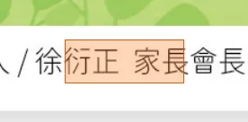 | 正家長會長 | 長 | ㄓㄤˇ | 家長 | rule_carried | 「家長」中的「長」應讀 ㄓㄤˇ。 | 發行人/徐衍正家長會長/薰製/辅導室校址/桃園市桃園區自强路80号電話/03-334-7883網址/www.csps.tyc.edu.tw | annotated | ||
| high | semantic_classified | 1 | T007 | 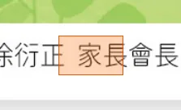 | 長會長 | 長 | ㄓㄤˇ | 會長 | semantic_rule_matched | 「會長」中的「長」應讀 ㄓㄤˇ。 | 發行人/徐衍正家長會長/薰製/辅導室校址/桃園市桃園區自强路80号電話/03-334-7883網址/www.csps.tyc.edu.tw | annotated | ||
| high | semantic_classified | 1 | T008 | 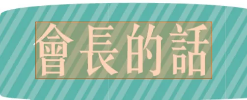 | 會長的話 | 長 | ㄓㄤˇ | 會長 | semantic_rule_matched | 「會長」中的「長」應讀 ㄓㄤˇ。 | 會長的話 | annotated | ||
| high | semantic_classified | 1 | T009 | 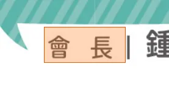 | 會長 | 長 | ㄓㄤˇ | 會長 | semantic_rule_matched | 「會長」中的「長」應讀 ㄓㄤˇ。 | 會長I鐘薰 | annotated | ||
| high | rule_matched | 1 | T010 | 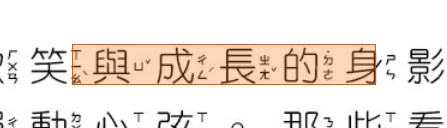 | 與成長的身 | 長 | ㄓㄤˇ | 成長 | rule_carried | 「成長」中的「長」應讀 ㄓㄤˇ。 | 孩子們奔跑、歡笑與成長的身影， | annotated | ||
| high | rule_matched | 1 | T021 | 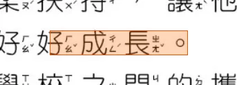 | 好成長 | 長 | ㄓㄤˇ | 成長 | rule_carried | 「成長」中的「長」應讀 ㄓㄤˇ。 | 值得被愛與好好成長 | annotated | ||
| high | rule_matched | 1 | T024 | 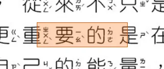 | 重要的 | 重 | ㄓㄨㄥˋ | 重要 | rule_carried | 「重要」中的「重」應讀 ㄓㄨㄥˋ。 | 懂、考試考好，更《重要的是在成長的過 | annotated | ||
| high | rule_matched | 1 | T024 | 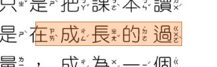 | 在成長的過 | 長 | ㄓㄤˇ | 成長 | rule_carried | 「成長」中的「長」應讀 ㄓㄤˇ。 | 懂、考試考好，更《重要的是在成長的過 | annotated | ||
| high | rule_matched | 1 | T025 | 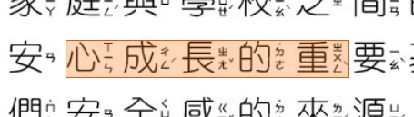 | 心成長的重 | 長 | ㄓㄤˇ | 成長 | rule_carried | 「成長」中的「長」應讀 ㄓㄤˇ。 | 孩子安心成長的重要基石，父母永遠是 | annotated | ||
| high | rule_matched | 1 | T025 | 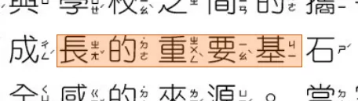 | 長的重要基 | 重 | ㄓㄨㄥˋ | 重要 | rule_carried | 「重要」中的「重」應讀 ㄓㄨㄥˋ。 | 孩子安心成長的重要基石，父母永遠是 | annotated | ||
| high | rule_matched | 1 | T026 | 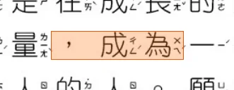 | 成為一 | 為 | ㄨㄟˊ | 成為 | rule_carried | 「成為」中的「為」應讀二聲，不是四聲。 | 程中，如何累自己的能量，成為一-個 | annotated | ||
| high | rule_matched | 1 | T027 | 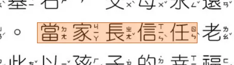 | 當家長信任 | 長 | ㄓㄤˇ | 家長 | rule_carried | 「家長」中的「長」應讀 ㄓㄤˇ。 | 孩子們安全感的來源。當家長信任老師 | annotated | ||
| high | rule_matched | 1 | T029 | 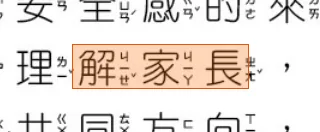 | 解家長 | 長 | ㄓㄤˇ | 家長 | rule_carried | 「家長」中的「長」應讀 ㄓㄤˇ。 | ，老師理解家長，彼此以-孩子的幸福與 | annotated | ||
| high | rule_matched | 1 | T031 | 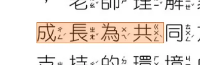 | 成長為共 | 長 | ㄓㄤˇ | 成長 | rule_carried | 「成長」中的「長」應讀 ㄓㄤˇ。 | 成長為共同方向，孩子便能在充满愛與 | annotated | ||
| high | semantic_classified | 1 | T031 | 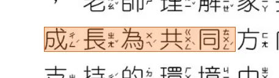 | 成長為共同 | 為 | ㄨㄟˊ | 成長為 | semantic_rule_matched | 「成長為」中的「為」應讀 ㄨㄟˊ。 | 成長為共同方向，孩子便能在充满愛與 | annotated | ||
| high | rule_matched | 1 | T035 | 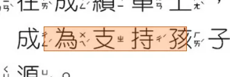 | 成為支持 | 為 | ㄨㄟˊ | 成為 | rule_carried | 「成為」中的「為」應讀二聲，不是四聲。 | 人生2裡，成為支持孩子走過風雨、迎向 | annotated | ||
| high | rule_matched | 1 | T042 | 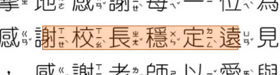 | 謝校長穩定 | 長 | ㄓㄤˇ | 校長 | rule_carried | 「校長」中的「長」應讀 ㄓㄤˇ。 | 的人。感謝校長穩定遠見地带學校持 | annotated | ||
| high | rule_matched | 1 | T045 | 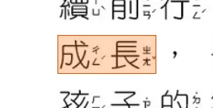 | 成長 | 長 | ㄓㄤˇ | 成長 | rule_carried | 「成長」中的「長」應讀 ㄓㄤˇ。 | 成長，也感謝每位家長的支持與参與。 | annotated | ||
| high | rule_matched | 1 | T045 | 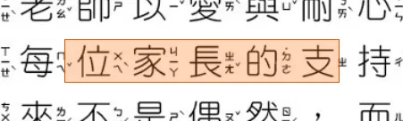 | 位家長的支 | 長 | ㄓㄤˇ | 家長 | rule_carried | 「家長」中的「長」應讀 ㄓㄤˇ。 | 成長，也感謝每位家長的支持與参與。 | annotated | ||
| high | semantic_classified | 1 | T046 | 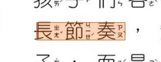 | 長節奏 | 長 | ㄔㄤˊ | 長節奏 | semantic_rule_matched | 「長節奏」中的「長」應讀 ㄔㄤˊ。 | 長節奏，無须用同一-把尺去衡量每位孩 | annotated | ||
| high | semantic_classified | 1 | T053 | 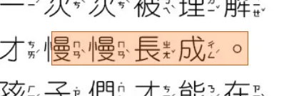 | 慢慢長成 | 長 | ㄓㄤˇ | 長成 | semantic_rule_matched | 「長成」中的「長」應讀 ㄓㄤˇ。 | 、被接住、被鼓之後，才慢慢長成 | annotated | ||
| high | rule_matched | 1 | T055 | 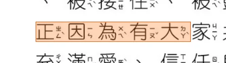 | 正因為有大 | 為 | ㄨㄟˋ | 因為 | rule_carried | 「因為」中的「為」應讀四聲。 | 正因為有大家共同守護，孩子們才能在 | annotated | ||
| high | rule_matched | 1 | T057 | 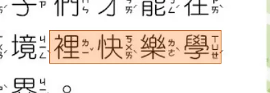 | 裡快樂學 | 樂 | ㄌㄜˋ | 快樂 | rule_carried | 「快樂」中的「樂」應讀 ㄌㄜˋ。 | 充满愛、信任與安全感的環境裡快樂學 | annotated | ||
| high | rule_matched | 1 | T059 | 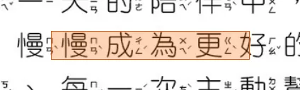 | 慢成為更好 | 為 | ㄨㄟˊ | 成為 | rule_carried | 「成為」中的「為」應讀二聲，不是四聲。 | 助孩子每天更《進步，慢慢成為更好的自” | annotated | ||
| high | rule_matched | 4 | T009 | 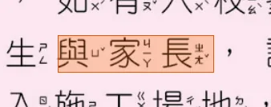 | 與家長 | 長 | ㄓㄤˇ | 家長 | rule_carried | 「家長」中的「長」應讀 ㄓㄤˇ。 | 生與家長，請留意自身安全，請勿進 | annotated | ||
| high | rule_matched | 4 | T033 | 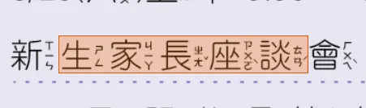 | 生家長座谈 | 長 | ㄓㄤˇ | 家長 | rule_carried | 「家長」中的「長」應讀 ㄓㄤˇ。 | 新生家長座谈會 | annotated | ||
| high | rule_matched | 4 | T054 | 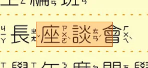 | 家長座谈 | 長 | ㄓㄤˇ | 家長 | rule_carried | 「家長」中的「長」應讀 ㄓㄤˇ。 | 058/29（六）家長座谈會 | annotated | ||
| high | rule_matched | 5 | T006 | 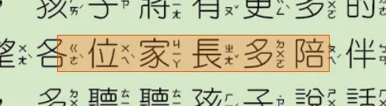 | 位家長多陪 | 長 | ㄓㄤˇ | 家長 | rule_carried | 「家長」中的「長」應讀 ㄓㄤˇ。 | 在家庭中，希各位家長多陪伴孩子 | annotated | ||
| high | rule_matched | 5 | T021 |  | 為了眼 | 為 | ㄨㄟˋ | 為了 | rule_carried | 「為了」中的「為」應讀四聲。 | 板電腦等23C產品機會《日益-普及，為了眼 | annotated | ||
| high | rule_matched | 5 | T023 | 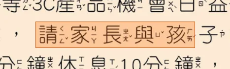 | 請家長與孩 | 長 | ㄓㄤˇ | 家長 | rule_carried | 「家長」中的「長」應讀 ㄓㄤˇ。 | 晴健康，請家長與孩子約定使用时間 | annotated | ||
| high | rule_matched | 5 | T034 | 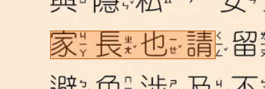 | 家長也請 | 長 | ㄓㄤˇ | 家長 | rule_carried | 「家長」中的「長」應讀 ㄓㄤˇ。 | 家長也請留意-孩子的網路使用状况， | annotated | ||
| high | rule_matched | 5 | T042 | 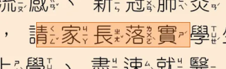 | 請家長落實 | 長 | ㄓㄤˇ | 家長 | rule_carried | 「家長」中的「長」應讀 ㄓㄤˇ。 | 諾羅病毒等)仍盛行，請家長落實學生 | annotated | ||
| high | rule_matched | 13 | T034 | 成為情的 | 為 | ㄨㄟˊ | 成為 | rule_carried | 「成為」中的「為」應讀二聲，不是四聲。 | 成為情的主人：開 | annotated | |||
| high | semantic_classified | 13 | T036 | 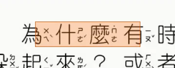 | 為什有 | 為 | ㄨㄟˋ | 為什 | semantic_rule_matched | 「為什麼」語境中的「為」應讀 ㄨㄟˋ。 | 親愛的同學，你們有没有想過，為什有時候我們會覺得心裡熱熱的 | annotated | ||
| high | semantic_classified | 13 | T037 | 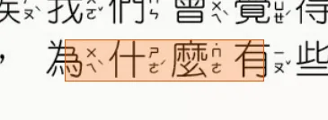 | 為什有 | 為 | ㄨㄟˋ | 為什 | semantic_rule_matched | 「為什麼」語境中的「為」應讀 ㄨㄟˋ。 | 想發脾氣，有時候覺得冷冷的想躲起來？或者，為什有些人總能跟大 | annotated | ||
| high | rule_matched | 13 | T048 | 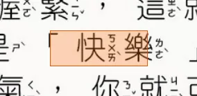 | 快樂 | 樂 | ㄌㄜˋ | 快樂 | rule_carried | 「快樂」中的「樂」應讀 ㄌㄜˋ。 | 的警報；當你考試考好時你覺得輕飄飄的，這就是「快樂」的訊號。 | annotated | ||
| high | semantic_classified | 13 | T049 | 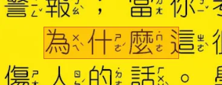 | 為什這 | 為 | ㄨㄟˋ | 為什 | semantic_rule_matched | 「為什麼」語境中的「為」應讀 ㄨㄟˋ。 | 為什這很重要？因為如果你不知道自己在生氣，你就可能不小心 | annotated | ||
| high | rule_matched | 13 | T049 | 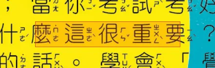 | 這很重要 | 重 | ㄓㄨㄥˋ | 重要 | rule_carried | 「重要」中的「重」應讀 ㄓㄨㄥˋ。 | 為什這很重要？因為如果你不知道自己在生氣，你就可能不小心 | annotated | ||
| high | rule_matched | 13 | T049 | 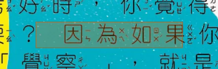 | 因為如果 | 為 | ㄨㄟˋ | 因為 | rule_carried | 「因為」中的「為」應讀四聲。 | 為什這很重要？因為如果你不知道自己在生氣，你就可能不小心 | annotated | ||
| high | rule_matched | 15 | T002 | 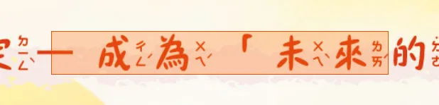 | 一成為未來 | 為 | ㄨㄟˊ | 成為 | rule_carried | 「成為」中的「為」應讀二聲，不是四聲。 | 秘笈五：負任的決定一成為未來的言家」 | annotated | ||
| high | rule_matched | 15 | T003 | 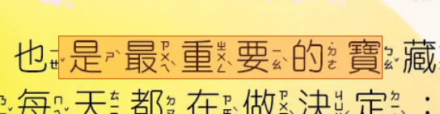 | 是最重要的 | 重 | ㄓㄨㄥˋ | 重要 | rule_carried | 「重要」中的「重」應讀 ㄓㄨㄥˋ。 | 最後個，也是最重要的實藏：自我負任的決定」 | annotated | ||
| high | rule_matched | 15 | T008 | 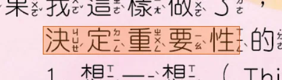 | 決定重要性 | 重 | ㄓㄨㄥˋ | 重要 | rule_carried | 「重要」中的「重」應讀 ㄓㄨㄥˋ。 | 決定重要性的三部曲： | annotated | ||
| high | semantic_classified | 15 | T012 | 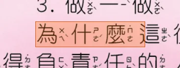 | 為什這 | 為 | ㄨㄟˋ | 為什 | semantic_rule_matched | 「為什麼」語境中的「為」應讀 ㄨㄟˋ。 | 為什這很重要？因為你的每一個小決定，都在識你的未來。—個 | annotated | ||
| high | rule_matched | 15 | T012 | 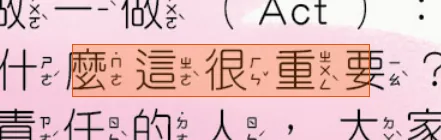 | 這很重要 | 重 | ㄓㄨㄥˋ | 重要 | rule_carried | 「重要」中的「重」應讀 ㄓㄨㄥˋ。 | 為什這很重要？因為你的每一個小決定，都在識你的未來。—個 | annotated | ||
| high | rule_matched | 15 | T012 | 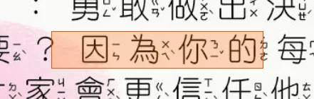 | 因為你的 | 為 | ㄨㄟˋ | 因為 | rule_carried | 「因為」中的「為」應讀四聲。 | 為什這很重要？因為你的每一個小決定，都在識你的未來。—個 | annotated | ||
| high | rule_matched | 15 | T014 | 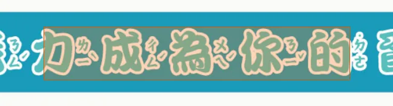 | 力成為你的 | 為 | ㄨㄟˊ | 成為 | rule_carried | 「成為」中的「為」應讀二聲，不是四聲。 | 總結：镶超能&力成為你的習惯！ | annotated | ||
| high | semantic_classified | 16 | T012 | 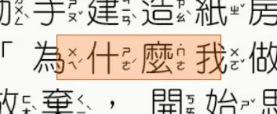 | 為什我 | 為 | ㄨㄟˋ | 為什 | semantic_rule_matched | 「為什麼」語境中的「為」應讀 ㄨㄟˋ。 | 「老師，它一直倒掉？」、「為什我做好就塌了？」 | annotated | ||
| high | semantic_classified | 16 | T015 | 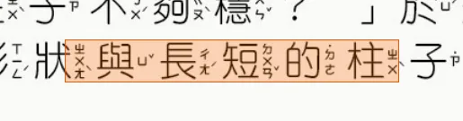 | 状與長短的 | 長 | ㄔㄤˊ | 長短 | semantic_rule_matched | 「長短」中的「長」應讀 ㄔㄤˊ。 | 他們比较不同形状與長短的柱子，反覆測試，甚至用手風來驗穩 | annotated | ||
| high | rule_matched | 16 | T021 | 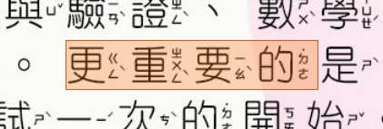 | 更重要的 | 重 | ㄓㄨㄥˋ | 重要 | rule_carried | 「重要」中的「重」應讀 ㄓㄨㄥˋ。 | 、工程的結構設計，以及藝術的創意表現。更重要的是，他們學會了一件 | annotated | ||
| high | rule_matched | 17 | T003 | 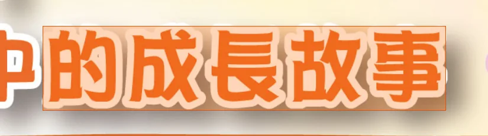 | 的成長故事 | 長 | ㄓㄤˇ | 成長 | rule_carried | 「成長」中的「長」應讀 ㄓㄤˇ。 | 孩子在大肌肉活動中的成長故事 | annotated | ||
| high | rule_matched | 17 | T021 | 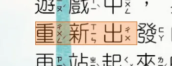 | 重新出 | 重 | ㄔㄨㄥˊ | 重新 | rule_carried | 「重新」中的「重」應讀 ㄔㄨㄥˊ。 | 重新出發的過程裡，他們學會《調整情，也學會《享受過程。這份挫折中 | annotated | ||
| high | rule_matched | 17 | T022 | 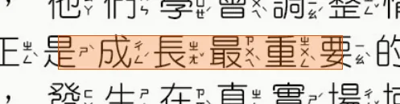 | 是成長最重 | 長 | ㄓㄤˇ | 成長 | rule_carried | 「成長」中的「長」應讀 ㄓㄤˇ。 | 再站起來的力量，正是成長最重要的養分 | annotated | ||
| high | rule_matched | 17 | T022 | 長最重要的 | 重 | ㄓㄨㄥˋ | 重要 | rule_carried | 「重要」中的「重」應讀 ㄓㄨㄥˋ。 | 再站起來的力量，正是成長最重要的養分 | annotated | |||
| high | rule_matched | 17 | T026 | 成為我做 | 為 | ㄨㄟˊ | 成為 | rule_carried | 「成為」中的「為」應讀二聲，不是四聲。 | 轉化為心裡的力量，成為我做得到」的真實經。 | annotated | |||
| high | rule_matched | 17 | T026 | 我做得到 | 得 | ㄉㄜˊ | 得到 | rule_carried | 「得到」中的「得」應讀 ㄉㄜˊ。 | 轉化為心裡的力量，成為我做得到」的真實經。 | annotated | |||
| high | semantic_classified | 17 | T033 | 慢慢長出面 | 長 | ㄓㄤˇ | 長出 | semantic_rule_matched | 「長出」中的「長」應讀 ㄓㄤˇ。 | 停下與再出發之間，慢慢長出面對世界的勇氣。那是種「野」出發， | annotated | |||
| high | rule_matched | 19 | T015 | 與行為表 | 行 | ㄒㄧㄥˊ | 行為 | rule_carried | 「行為」中的「行」應讀 ㄒㄧㄥˊ。 | 識，學習搭乘大最運输时應有的禮儀-與行為表現。 | annotated | |||
| high | semantic_classified | 19 | T015 | 與行為表現 | 為 | ㄨㄟˊ | 行為 | semantic_rule_matched | 「行為」中的「為」應讀 ㄨㄟˊ。 | 識，學習搭乘大最運输时應有的禮儀-與行為表現。 | annotated | |||
| high | rule_matched | 20 | T006 | 成為赫赫 | 為 | ㄨㄟˊ | 成為 | rule_carried | 「成為」中的「為」應讀二聲，不是四聲。 | 適更《會使我自暴自，但有個人，突破了這些障，成為赫赫有名的 | annotated | |||
| high | rule_matched | 21 | T004 | 成為他們 | 為 | ㄨㄟˊ | 成為 | rule_carried | 「成為」中的「為」應讀二聲，不是四聲。 | 成為他們溫暖的支持力量 | annotated | |||
| high | rule_matched | 21 | T026 | 要先了解他 | 了 | ㄌㄧㄠˇ | 了解 | rule_carried | 「了解」中的「了」應讀 ㄌㄧㄠˇ。 | 要先了解他的需要，再用適合的方法助他， | annotated | |||
| high | rule_matched | 22 | T007 | 非常重要 | 重 | ㄓㄨㄥˋ | 重要 | rule_carried | 「重要」中的「重」應讀 ㄓㄨㄥˋ。 | 非常重要！一一個友善的眼神、 | annotated | |||
| high | rule_matched | 22 | T018 | 成為溫暖 | 為 | ㄨㄟˊ | 成為 | rule_carried | 「成為」中的「為」應讀二聲，不是四聲。 | 成為溫暖的小手 | annotated | |||
| high | rule_matched | 23 | T009 | 中成長 | 長 | ㄓㄤˇ | 成長 | rule_carried | 「成長」中的「長」應讀 ㄓㄤˇ。 | 都能在安心的環境中成長。 | annotated | |||
| high | semantic_classified | 23 | T010 | 己的長處 | 長 | ㄔㄤˊ | 長處 | semantic_rule_matched | 「長處」中的「長」應讀 ㄔㄤˊ。 | 每個人都有自己的長處，障凝只是其中一個 | annotated | |||
| high | rule_matched | 23 | T012 | 家長的話 | 長 | ㄓㄤˇ | 家長 | rule_carried | 「家長」中的「長」應讀 ㄓㄤˇ。 | 五、給《家長的話 | annotated | |||
| high | rule_matched | 23 | T013 | 家長是孩 | 長 | ㄓㄤˇ | 家長 | rule_carried | 「家長」中的「長」應讀 ㄓㄤˇ。 | 家長是孩子最重要的支持力量。 | annotated | |||
| high | rule_matched | 23 | T013 | 子最重要的 | 重 | ㄓㄨㄥˋ | 重要 | rule_carried | 「重要」中的「重」應讀 ㄓㄨㄥˋ。 | 家長是孩子最重要的支持力量。 | annotated | |||
| high | rule_matched | 23 | T019 | 最重要的 | 重 | ㄓㄨㄥˋ | 重要 | rule_carried | 「重要」中的「重」應讀 ㄓㄨㄥˋ。 | 最重要的一一句話多 | annotated | |||
| high | rule_matched | 23 | T024 | 了解肢 | 了 | ㄌㄧㄠˇ | 了解 | rule_carried | 「了解」中的「了」應讀 ㄌㄧㄠˇ。 | 了解肢體障光分的定義一與心特點 | annotated | |||
| high | rule_matched | 24 | T023 | 他得到應 | 得 | ㄉㄜˊ | 得到 | rule_carried | 「得到」中的「得」應讀 ㄉㄜˊ。 | 止聊天報警，他得到應有的處，保護自己也保護他人 | annotated | |||
| high | rule_matched | 24 | T025 | 我了解到 | 了 | ㄌㄧㄠˇ | 了解 | rule_carried | 「了解」中的「了」應讀 ㄌㄧㄠˇ。 | 看完影片後，我了解到網路的危。網路世界有許多陷阱，像是先和你 | annotated | |||
| high | rule_matched | 24 | T034 | 助我了解網 | 了 | ㄌㄧㄠˇ | 了解 | rule_carried | 「了解」中的「了」應讀 ㄌㄧㄠˇ。 | 絡方式，合天的影片帮助我了解網路的危以及保護方式，真是太有助了！ | annotated | |||
| high | rule_matched | 25 | T007 | 我了解了 | 了 | ㄌㄧㄠˇ | 了解 | rule_carried | 「了解」中的「了」應讀 ㄌㄧㄠˇ。 | ，能你在被威時反制罪犯。看完這段影片，我了解了網路交友 | annotated | |||
| high | rule_matched | 25 | T015 | 因為對方 | 為 | ㄨㄟˋ | 因為 | rule_carried | 「因為」中的「為」應讀四聲。 | 要的。此外，我為我們需要有分清黑白的能力，因為對方可能會 | annotated | |||
| high | semantic_classified | 25 | T018 | 以身為小學 | 為 | ㄨㄟˊ | 身為 | semantic_rule_matched | 「身為」中的「為」應讀 ㄨㄟˊ。 | 所以身為小學生的我們要小開始學習，也要遵守五不四要的原 | annotated | |||
| high | rule_matched | 25 | T023 | 因為這樣 | 為 | ㄨㄟˋ | 因為 | rule_carried | 「因為」中的「為」應讀四聲。 | 像和絡方式，因為這樣才能保護自己，所以定要牢記在心。我 | annotated | |||
| high | rule_matched | 25 | T030 | 能成為一 | 為 | ㄨㄟˊ | 成為 | rule_carried | 「成為」中的「為」應讀二聲，不是四聲。 | 己能成為一-個明的網路使~用者 | annotated | |||
| high | rule_matched | 26 | T014 | 片是為了提 | 為 | ㄨㄟˋ | 為了 | rule_carried | 「為了」中的「為」應讀四聲。 | 這個影片是為了提醒青少年察覺網路交友陷阱和性影像外流的 | annotated | |||
| high | semantic_classified | 27 | T009 | 藏著重重危 | 重 | ㄔㄨㄥˊ | 重重 | semantic_rule_matched | 「重重」中的「重」通常讀 ㄔㄨㄥˊ。 | 藏著重重危機，就像在馬路上行走，要注意左右來車、遵守交通 | annotated | |||
| high | semantic_classified | 27 | T009 | 著重重危機 | 重 | ㄔㄨㄥˊ | 重重 | semantic_rule_matched | 「重重」中的「重」通常讀 ㄔㄨㄥˊ。 | 藏著重重危機，就像在馬路上行走，要注意左右來車、遵守交通 | annotated | |||
| high | rule_matched | 30 | T001 | 師長祝福 | 長 | ㄓㄤˇ | 師長 | rule_carried | 「師長」中的「長」應讀 ㄓㄤˇ。 | 師長祝福 | annotated | |||
| high | semantic_classified | 30 | T003 | 資組長黄志 | 長 | ㄓㄤˇ | 組長 | semantic_rule_matched | 「組長」中的「長」應讀 ㄓㄤˇ。 | 資組長黄志豪 | annotated | |||
| high | semantic_classified | 30 | T029 | 組長杨天 | 長 | ㄓㄤˇ | 組長 | semantic_rule_matched | 「組長」中的「長」應讀 ㄓㄤˇ。 | 事>務×組長杨天德 | annotated | |||
| high | rule_matched | 30 | T041 | 業快樂 | 樂 | ㄌㄜˋ | 快樂 | rule_carried | 「快樂」中的「樂」應讀 ㄌㄜˋ。 | 業快樂·程萬里! | annotated | |||
| high | semantic_classified | 30 | T044 | 學組長陳建 | 長 | ㄓㄤˇ | 組長 | semantic_rule_matched | 「組長」中的「長」應讀 ㄓㄤˇ。 | 教學組長陳建安 | annotated | |||
| high | rule_matched | 30 | T045 | 業快樂 | 樂 | ㄌㄜˋ | 快樂 | rule_carried | 「快樂」中的「樂」應讀 ㄌㄜˋ。 | 祝福你，業快樂！ | annotated | |||
| high | semantic_classified | 30 | T049 | 書組長吴雅 | 長 | ㄓㄤˇ | 組長 | semantic_rule_matched | 「組長」中的「長」應讀 ㄓㄤˇ。 | 文書組長吴雅真 | annotated | |||
| high | semantic_classified | 30 | T052 | 備組長羅靜 | 長 | ㄓㄤˇ | 組長 | semantic_rule_matched | 「組長」中的「長」應讀 ㄓㄤˇ。 | 設備組長羅靜之 | annotated | |||
| high | rule_matched | 31 | T001 | 師長祝福 | 長 | ㄓㄤˇ | 師長 | rule_carried | 「師長」中的「長」應讀 ㄓㄤˇ。 | 師長祝福 | annotated | |||
| high | semantic_classified | 31 | T002 | 導組長陳莉 | 長 | ㄓㄤˇ | 組長 | semantic_rule_matched | 「組長」中的「長」應讀 ㄓㄤˇ。 | 辅導組長陳莉榛 | annotated | |||
| high | semantic_classified | 31 | T003 | 生組長陳如 | 長 | ㄓㄤˇ | 組長 | semantic_rule_matched | 「組長」中的「長」應讀 ㄓㄤˇ。 | 衛生組長陳如 | annotated | |||
| high | rule_matched | 31 | T030 | 快樂 | 樂 | ㄌㄜˋ | 快樂 | rule_carried | 「快樂」中的「樂」應讀 ㄌㄜˋ。 | 快樂！ | annotated | |||
| high | rule_matched | 31 | T031 | 業快樂 | 樂 | ㄌㄜˋ | 快樂 | rule_carried | 「快樂」中的「樂」應讀 ㄌㄜˋ。 | 祝業快樂 | annotated | |||
| high | rule_matched | 31 | T048 | 有成長與收 | 長 | ㄓㄤˇ | 成長 | rule_carried | 「成長」中的「長」應讀 ㄓㄤˇ。 | 有成長與收。希望你3 | annotated | |||
| high | rule_matched | 31 | T054 | 業快樂 | 樂 | ㄌㄜˋ | 快樂 | rule_carried | 「快樂」中的「樂」應讀 ㄌㄜˋ。 | 錦、業快樂 | annotated | |||
| high | rule_matched | 32 | T001 | 師長祝福 | 長 | ㄓㄤˇ | 師長 | rule_carried | 「師長」中的「長」應讀 ㄓㄤˇ。 | 師長祝福 | annotated | |||
| high | semantic_classified | 32 | T019 | 他人著想 | 著 | ㄓㄨㄛˊ | 著想 | semantic_rule_matched | 「著想」中的「著」應讀 ㄓㄨㄛˊ。 | 也别忘了替他人著想 | annotated | |||
| high | rule_matched | 33 | T001 | 師長祝福 | 長 | ㄓㄤˇ | 師長 | rule_carried | 「師長」中的「長」應讀 ㄓㄤˇ。 | 師長祝福 | annotated | |||
| high | rule_matched | 33 | T028 | 為成長的養 | 長 | ㄓㄤˇ | 成長 | rule_carried | 「成長」中的「長」應讀 ㄓㄤˇ。 | 將困難化為成長的養 | annotated | |||
| high | rule_matched | 33 | T048 | 已成為我們 | 為 | ㄨㄟˊ | 成為 | rule_carried | 「成為」中的「為」應讀二聲，不是四聲。 | 取榮響，已成為我們心中最 | annotated | |||
| high | rule_matched | 33 | T057 | 將成為硬的 | 為 | ㄨㄟˊ | 成為 | rule_carried | 「成為」中的「為」應讀二聲，不是四聲。 | 將成為硬的盔甲 | annotated | |||
| high | rule_matched | 33 | T058 | 在成長中砥 | 長 | ㄓㄤˇ | 成長 | rule_carried | 「成長」中的「長」應讀 ㄓㄤˇ。 | 會《勇敢，在成長中砥品德 | annotated | |||
| high | semantic_classified | 33 | T060 | 增長智慧 | 長 | ㄓㄤˇ | 增長 | semantic_rule_matched | 「增長」中的「長」應讀 ㄓㄤˇ。 | 增長智慧。祝福親愛的孩 | annotated | |||
| high | rule_matched | 33 | T065 | 業快樂 | 樂 | ㄌㄜˋ | 快樂 | rule_carried | 「快樂」中的「樂」應讀 ㄌㄜˋ。 | 祝你3們業快樂 | annotated | |||
| high | rule_matched | 34 | T001 | 師長祝福 | 長 | ㄓㄤˇ | 師長 | rule_carried | 「師長」中的「長」應讀 ㄓㄤˇ。 | 師長祝福 | annotated | |||
| high | rule_matched | 34 | T009 | 業快樂 | 樂 | ㄌㄜˋ | 快樂 | rule_carried | 「快樂」中的「樂」應讀 ㄌㄜˋ。 | 業快樂！ | annotated | |||
| high | rule_matched | 34 | T016 | 成為點亮 | 為 | ㄨㄟˊ | 成為 | rule_carried | 「成為」中的「為」應讀二聲，不是四聲。 | 持，也一-定能再次跨越困難。你們帶著善良，成為點亮 | annotated | |||
| high | rule_matched | 34 | T027 | 成長 | 長 | ㄓㄤˇ | 成長 | rule_carried | 「成長」中的「長」應讀 ㄓㄤˇ。 | 成長，我都記得 | annotated | |||
| high | rule_matched | 34 | T031 | 能成為懂 | 為 | ㄨㄟˊ | 成為 | rule_carried | 「成為」中的「為」應讀二聲，不是四聲。 | 只是會讀書，更《能成為懂 | annotated | |||
| high | rule_matched | 34 | T046 | 業快樂 | 樂 | ㄌㄜˋ | 快樂 | rule_carried | 「快樂」中的「樂」應讀 ㄌㄜˋ。 | 的世界。業快樂！ | annotated | |||
| high | semantic_classified | 35 | T012 | 過漫長的小 | 長 | ㄔㄤˊ | 漫長 | semantic_rule_matched | 「漫長」中的「長」應讀 ㄔㄤˊ。 | 要感謝我的同學、朋友，陪我度過漫長的小學時光，陪伴著我 | annotated | |||
| high | rule_matched | 35 | T013 | 長大 | 長 | ㄓㄤˇ | 長大 | rule_carried | 「長大」中的「長」應讀 ㄓㄤˇ。 | 長大，也總是帮助我、協助我，在我難過時安慰我，也在我無 | annotated | |||
| high | rule_matched | 35 | T018 | 業快樂 | 樂 | ㄌㄜˋ | 快樂 | rule_carried | 「快樂」中的「樂」應讀 ㄌㄜˋ。 | 業快樂，致青春 | annotated | |||
| high | rule_matched | 35 | T027 | 成為我的 | 為 | ㄨㄟˊ | 成為 | rule_carried | 「成為」中的「為」應讀二聲，不是四聲。 | 度光陰而息，成為我的快樂充電站 | annotated | |||
| high | rule_matched | 35 | T027 | 的快樂充電 | 樂 | ㄌㄜˋ | 快樂 | rule_carried | 「快樂」中的「樂」應讀 ㄌㄜˋ。 | 度光陰而息，成為我的快樂充電站 | annotated | |||
| high | rule_matched | 36 | T030 | 得到 | 得 | ㄉㄜˊ | 得到 | rule_carried | 「得到」中的「得」應讀 ㄉㄜˊ。 | 得到 | annotated | |||
| high | rule_matched | 36 | T043 | 上因為下大 | 為 | ㄨㄟˋ | 因為 | rule_carried | 「因為」中的「為」應讀四聲。 | 某個星期五早上因為下大雨 | annotated | |||
| high | rule_matched | 36 | T080 | 業快樂 | 樂 | ㄌㄜˋ | 快樂 | rule_carried | 「快樂」中的「樂」應讀 ㄌㄜˋ。 | 業快樂」 | annotated | |||
| high | rule_matched | 37 | T004 | 小成長 | 長 | ㄓㄤˇ | 成長 | rule_carried | 「成長」中的「長」應讀 ㄓㄤˇ。 | 溪國小成長，我覺得自己非常幸運。這裡有用心教導我們的好 | annotated | |||
| high | rule_matched | 37 | T006 | 快樂 | 樂 | ㄌㄜˋ | 快樂 | rule_carried | 「快樂」中的「樂」應讀 ㄌㄜˋ。 | 教室明亮、校園整潔，非常適合讀書，我能安心學習、快樂 | annotated | |||
| high | rule_matched | 37 | T007 | 成長 | 長 | ㄓㄤˇ | 成長 | rule_carried | 「成長」中的「長」應讀 ㄓㄤˇ。 | 成長 | annotated | |||
| high | rule_matched | 37 | T011 | 成為我心 | 為 | ㄨㄟˊ | 成為 | rule_carried | 「成為」中的「為」應讀二聲，不是四聲。 | 對挑。這些點點滴滴，都會《成為我心中最美好的回《憶。即將 | annotated | |||
| high | rule_matched | 37 | T030 | 能成為更 | 為 | ㄨㄟˊ | 成為 | rule_carried | 「成為」中的「為」應讀二聲，不是四聲。 | 更《多考，勇敢接受挫折，才能成為更《好的自己。我們將帶著 | annotated | |||
| high | rule_matched | 39 | T008 | 我成長 | 長 | ㄓㄤˇ | 成長 | rule_carried | 「成長」中的「長」應讀 ㄓㄤˇ。 | 六年的光陰中不使自我成長 | annotated | |||
| high | rule_matched | 39 | T026 | 們成長的最 | 長 | ㄓㄤˇ | 成長 | rule_carried | 「成長」中的「長」應讀 ㄓㄤˇ。 | 雨的習。那種一-起拼命、一-起瘋狂的感覺，都是我們成長的最好養 | annotated | |||
| high | rule_matched | 39 | T028 | 是為了下 | 為 | ㄨㄟˋ | 為了 | rule_carried | 「為了」中的「為」應讀四聲。 | 業，是為了下一次更《好的重逢，我們將要變成世界的探 | annotated | |||
| high | semantic_classified | 39 | T028 | 好的重逢 | 重 | ㄔㄨㄥˊ | 重逢 | semantic_rule_matched | 「重逢」中的「重」應讀 ㄔㄨㄥˊ。 | 業，是為了下一次更《好的重逢，我們將要變成世界的探 | annotated | |||
| high | rule_matched | 39 | T030 | 將成為我最 | 為 | ㄨㄟˊ | 成為 | rule_carried | 「成為」中的「為」應讀二聲，不是四聲。 | 但這六年的回憶，將成為我最坚強的盔甲，想到那些大家肩作的 | annotated | |||
| high | rule_matched | 40 | T004 | 的學長姐好 | 長 | ㄓㄤˇ | 學長 | rule_carried | 「學長」中的「長」應讀 ㄓㄤˇ。 | 各位六年級的學長姐好， | annotated | |||
| high | rule_matched | 40 | T008 | 的學長姐送 | 長 | ㄓㄤˇ | 學長 | rule_carried | 「學長」中的「長」應讀 ㄓㄤˇ。 | 的學長姐送上最真誠的祝福 | annotated | |||
| high | semantic_classified | 40 | T013 | 漫長 | 長 | ㄔㄤˊ | 漫長 | semantic_rule_matched | 「漫長」中的「長」應讀 ㄔㄤˊ。 | 漫長，直到業這一天，才發 | annotated | |||
| high | rule_matched | 40 | T034 | 要重新適 | 重 | ㄔㄨㄥˊ | 重新 | rule_carried | 「重新」中的「重」應讀 ㄔㄨㄥˊ。 | 要重新適應，上课堂數增加 | annotated | |||
| high | rule_matched | 40 | T045 | 要成為日後 | 為 | ㄨㄟˊ | 成為 | rule_carried | 「成為」中的「為」應讀二聲，不是四聲。 | 相處時間，就要成為日後令人 | annotated | |||
| high | rule_matched | 40 | T064 | 成為你們 | 為 | ㄨㄟˊ | 成為 | rule_carried | 「成為」中的「為」應讀二聲，不是四聲。 | 成為你們業後最懷念的時光 | annotated | |||
| high | rule_matched | 40 | T066 | 業快樂 | 樂 | ㄌㄜˋ | 快樂 | rule_carried | 「快樂」中的「樂」應讀 ㄌㄜˋ。 | 面對，祝各位業快樂！珍重 | annotated | |||
| high | rule_matched | 41 | T004 | 學長姐們 | 長 | ㄓㄤˇ | 學長 | rule_carried | 「學長」中的「長」應讀 ㄓㄤˇ。 | 序曲。仰望花落的時光宛若昨日，轉眼間，學長姐們即將带著行囊 | annotated | |||
| high | rule_matched | 41 | T008 | 的學長姐們 | 長 | ㄓㄤˇ | 學長 | rule_carried | 「學長」中的「長」應讀 ㄓㄤˇ。 | 今年六月，六年級的學長姐們即將迎來業的時刻。時光飛逝 | annotated | |||
| high | rule_matched | 41 | T011 | 也成為即将 | 為 | ㄨㄟˊ | 成為 | rule_carried | 「成為」中的「為」應讀二聲，不是四聲。 | 們也成為即将被祝福的對象。 | annotated | |||
| high | rule_matched | 41 | T012 | 對學長姐們 | 長 | ㄓㄤˇ | 學長 | rule_carried | 「學長」中的「長」應讀 ㄓㄤˇ。 | 想對學長姐們：「然小學的生活即將告一段落，但是學習 | annotated | |||
| high | semantic_classified | 41 | T013 | 場漫長的馬 | 長 | ㄔㄤˊ | 漫長 | semantic_rule_matched | 「漫長」中的「長」應讀 ㄔㄤˊ。 | 的路程没有停止，就像一場漫長的馬拉松，學習這段路來没有終 | annotated | |||
| high | rule_matched | 41 | T014 | 件很重要的 | 重 | ㄓㄨㄥˋ | 重要 | rule_carried | 「重要」中的「重」應讀 ㄓㄨㄥˋ。 | 續學習之外，還有一件很重要的事是『休息』，每場馬拉松都有補 | annotated | |||
| high | rule_matched | 41 | T016 | 業快樂 | 樂 | ㄌㄜˋ | 快樂 | rule_carried | 「快樂」中的「樂」應讀 ㄌㄜˋ。 | 最後，祝福各位業生業快樂，國中生2活也能一-切順利！ | annotated | |||
| high | rule_matched | 41 | T019 | 會成為最珍 | 為 | ㄨㄟˊ | 成為 | rule_carried | 「成為」中的「為」應讀二聲，不是四聲。 | 來。過去一-起努力、一-起歡笑的時光，都會成為最珍貴《的回憶-。 | annotated | |||
| high | rule_matched | 42 | T005 | 的學長姐带 | 長 | ㄓㄤˇ | 學長 | rule_carried | 「學長」中的「長」應讀 ㄓㄤˇ。 | 的點點滴滴。回《憶-起當時剛來到青溪，是親切的學長姐带著我們 | annotated | |||
| high | rule_matched | 42 | T012 | 業快樂 | 樂 | ㄌㄜˋ | 快樂 | rule_carried | 「快樂」中的「樂」應讀 ㄌㄜˋ。 | 業快樂！ | annotated | |||
| high | rule_matched | 42 | T016 | 的學長姐們 | 長 | ㄓㄤˇ | 學長 | rule_carried | 「學長」中的「長」應讀 ㄓㄤˇ。 | 親愛的學長姐們，看著你 | annotated | |||
| high | rule_matched | 42 | T020 | 累成長的重 | 長 | ㄓㄤˇ | 成長 | rule_carried | 「成長」中的「長」應讀 ㄓㄤˇ。 | 累成長的重量。你們在熟 | annotated | |||
| high | rule_matched | 42 | T033 | 學長姐業 | 長 | ㄓㄤˇ | 學長 | rule_carried | 「學長」中的「長」應讀 ㄓㄤˇ。 | 祝福各位《學長姐業快樂· | annotated | |||
| high | rule_matched | 42 | T033 | 業快樂 | 樂 | ㄌㄜˋ | 快樂 | rule_carried | 「快樂」中的「樂」應讀 ㄌㄜˋ。 | 祝福各位《學長姐業快樂· | annotated | |||
| medium | semantic_classified | 1 | T007 | 發行人 | 行 | ㄒㄧㄥˊ | 發行 | semantic_rule_matched | 「發行」中的「行」應讀 ㄒㄧㄥˊ。 | 發行人/徐衍正家長會長/薰製/辅導室校址/桃園市桃園區自强路80号電話/03-334-7883網址/www.csps.tyc.edu.tw | annotated | |||
| medium | rule_matched | 1 | T014 | 其實藏著無 | 藏 | ㄘㄤˊ | 藏著 | rule_carried | 「藏著」中的「藏」應讀 ㄘㄤˊ。 | 平凡的日常，其實藏著無數温柔的陪伴 | annotated | |||
| medium | rule_matched | 1 | T014 | 實藏著無數 | 著 | ㄓㄜ˙ | 藏著 | rule_carried | 「藏著」中的「著」通常讀輕聲。 | 平凡的日常，其實藏著無數温柔的陪伴 | annotated | |||
| medium | semantic_classified | 1 | T015 | 必記得每天 | 得 | ㄉㄜ˙ | default_by_char_context | 未命中特定詞規則；此處「得」多半作補語/語氣連接，先按輕聲 ㄉㄜ˙ 標記。 | 們心中的力量。孩子們未必記得每天上 | annotated | ||||
| medium | semantic_classified | 1 | T017 | 記得曾經 | 得 | ㄉㄜ˙ | default_by_char_context | 未命中特定詞規則；此處「得」多半作補語/語氣連接，先按輕聲 ㄉㄜ˙ 標記。 | 课的細節，可能會《記得曾經有一位老 | annotated | ||||
| medium | rule_matched | 1 | T020 | 化為勇敢 | 為 | ㄨㄟˊ | 化為 | rule_carried | 「化為」中的「為」通常讀二聲。 | 月中悄然累，化為勇敢前進的力量 | annotated | |||
| medium | rule_matched | 1 | T021 | 值得被愛 | 得 | ㄉㄜˊ | 值得 | rule_carried | 「值得」中的「得」應讀 ㄉㄜˊ。 | 值得被愛與好好成長 | annotated | |||
| medium | semantic_classified | 1 | T028 | 懂得尊重 | 得 | ㄉㄜ˙ | default_by_char_context | 未命中特定詞規則；此處「得」多半作補語/語氣連接，先按輕聲 ㄉㄜ˙ 標記。 | 善良、負责、懂得尊重他人的人。意 | annotated | ||||
| medium | rule_matched | 1 | T028 | 得尊重他人 | 重 | ㄓㄨㄥˋ | 尊重 | rule_carried | 「尊重」中的「重」應讀 ㄓㄨㄥˋ。 | 善良、負责、懂得尊重他人的人。意 | annotated | |||
| medium | rule_matched | 1 | T043 | 有人樂於助 | 樂 | ㄌㄜˋ | 樂於 | rule_carried | 「樂於」中的「樂」應讀 ㄌㄜˋ。 | 也有人樂於助人、貼心照顧身的人 | annotated | |||
| medium | rule_matched | 1 | T044 | 續前行 | 行 | ㄒㄧㄥˊ | 前行 | rule_carried | 「前行」中的「行」應讀 ㄒㄧㄥˊ。 | 續前行，感謝老師以愛與耐心陪伴孩子 | annotated | |||
| medium | rule_matched | 1 | T052 | 尊重彼此 | 重 | ㄓㄨㄥˋ | 尊重 | rule_carried | 「尊重」中的「重」應讀 ㄓㄨㄥˋ。 | 尊重彼此的不同 | annotated | |||
| medium | rule_matched | 1 | T054 | 教育來 | 教 | ㄐㄧㄠˋ | 教育 | rule_carried | 「教育」中的「教」應讀 ㄐㄧㄠˋ。 | 教育來不是學校單方面的责任， | annotated | |||
| medium | rule_matched | 1 | T056 | 教育的 | 教 | ㄐㄧㄠˋ | 教育 | rule_carried | 「教育」中的「教」應讀 ㄐㄧㄠˋ。 | 教育的意義-也不是要把孩子培養成最耀 | annotated | |||
| medium | rule_matched | 4 | T004 | 教育局 | 教 | ㄐㄧㄠˋ | 教育 | rule_carried | 「教育」中的「教」應讀 ㄐㄧㄠˋ。 | 教育局補助本校辦理和平楼一至五楼 | annotated | |||
| medium | rule_matched | 4 | T008 | 感謝教育部 | 教 | ㄐㄧㄠˋ | 教育 | rule_carried | 「教育」中的「教」應讀 ㄐㄧㄠˋ。 | 02感謝教育部國民及學前教育署及本府 | annotated | |||
| medium | rule_matched | 4 | T008 | 學前教育署 | 教 | ㄐㄧㄠˋ | 教育 | rule_carried | 「教育」中的「教」應讀 ㄐㄧㄠˋ。 | 02感謝教育部國民及學前教育署及本府 | annotated | |||
| medium | rule_matched | 4 | T010 | 教育局 | 教 | ㄐㄧㄠˋ | 教育 | rule_carried | 「教育」中的「教」應讀 ㄐㄧㄠˋ。 | 教育局補助本校辨理附設幼兒園走廊 | annotated | |||
| medium | semantic_classified | 4 | T014 | 教務处 | 教 | ㄐㄧㄠˋ | 教務 | semantic_rule_matched | 「教務」中的「教」應讀 ㄐㄧㄠˋ。 | 教務处 | annotated | |||
| medium | rule_matched | 4 | T015 | 感謝教育部 | 教 | ㄐㄧㄠˋ | 教育 | rule_carried | 「教育」中的「教」應讀 ㄐㄧㄠˋ。 | 03感謝教育部國民及學前教育署及本府 | annotated | |||
| medium | rule_matched | 4 | T015 | 學前教育署 | 教 | ㄐㄧㄠˋ | 教育 | rule_carried | 「教育」中的「教」應讀 ㄐㄧㄠˋ。 | 03感謝教育部國民及學前教育署及本府 | annotated | |||
| medium | semantic_classified | 4 | T039 | 活化教室 | 教 | ㄐㄧㄠˋ | 教室 | semantic_rule_matched | 「教室」中的「教」應讀 ㄐㄧㄠˋ。 | 改善工程，建置多功能空間活化教室 | annotated | |||
| medium | rule_matched | 4 | T051 | 教學 | 教 | ㄐㄧㄠˋ | 教學 | rule_carried | 「教學」中的「教」應讀 ㄐㄧㄠˋ。 | 08辦理校園資設備更新，建置A教學 | annotated | |||
| medium | semantic_classified | 5 | T003 | 備輕便雨衣 | 便 | ㄅㄧㄢˋ | 輕便 | semantic_rule_matched | 「輕便」中的「便」應讀 ㄅㄧㄢˋ。 | 書包務必備輕便雨衣-，以-備不時之 | annotated | |||
| medium | rule_matched | 5 | T016 | 教育部 | 教 | ㄐㄧㄠˋ | 教育 | rule_carried | 「教育」中的「教」應讀 ㄐㄧㄠˋ。 | 美德，教育部自99年起推動「祖父母節 | annotated | |||
| medium | semantic_classified | 5 | T021 | 為了眼 | 了 | ㄌㄜ˙ | default_by_char_context | 未命中特定詞規則；此處「了」多半作語氣/完成助詞，先按輕聲 ㄌㄜ˙ 標記。 | 板電腦等23C產品機會《日益-普及，為了眼 | annotated | ||||
| medium | semantic_classified | 5 | T026 | 為 | 為 | ㄨㄟˋ | 為《阿公 | semantic_rule_matched | 「為阿公...」語境中的「為」通常讀 ㄨㄟˋ。 | ，如：為《阿公阿嬷倒杯水、—起<散步 | annotated | |||
| medium | rule_matched | 5 | T029 | 暖的行動 | 行 | ㄒㄧㄥˊ | 行動 | rule_carried | 「行動」中的「行」應讀 ㄒㄧㄥˊ。 | 忙做家事等，這些溫暖的行動，都 | annotated | |||
| medium | semantic_classified | 5 | T031 | 懂得保護 | 得 | ㄉㄜ˙ | default_by_char_context | 未命中特定詞規則；此處「得」多半作補語/語氣連接，先按輕聲 ㄉㄜ˙ 標記。 | 意安全上網守，懂得保護個人資 | annotated | ||||
| medium | rule_matched | 5 | T035 | 習尊重 | 重 | ㄓㄨㄥˋ | 尊重 | rule_carried | 「尊重」中的「重」應讀 ㄓㄨㄥˋ。 | 互動中學習尊重、感恩與任 | annotated | |||
| medium | semantic_classified | 5 | T036 | 們手為孩子 | 為 | ㄨㄟˋ | 為孩子 | semantic_rule_matched | 「為孩子」語境中的「為」通常讀 ㄨㄟˋ。 | 我們手為孩子打造溫馨有愛的家 | annotated | |||
| medium | semantic_classified | 5 | T042 | 仍盛行 | 行 | ㄒㄧㄥˊ | 盛行 | semantic_rule_matched | 「盛行」中的「行」應讀 ㄒㄧㄥˊ。 | 諾羅病毒等)仍盛行，請家長落實學生 | annotated | |||
| medium | rule_matched | 13 | T001 | 親職教育專 | 教 | ㄐㄧㄠˋ | 教育 | rule_carried | 「教育」中的「教」應讀 ㄐㄧㄠˋ。 | 親職教育專 | annotated | |||
| medium | rule_matched | 13 | T036 | 會覺得心裡 | 得 | ㄉㄜ˙ | 覺得 | rule_carried | 「覺得」中的「得」常讀輕聲。 | 親愛的同學，你們有没有想過，為什有時候我們會覺得心裡熱熱的 | annotated | |||
| medium | rule_matched | 13 | T037 | 候覺得冷冷 | 得 | ㄉㄜ˙ | 覺得 | rule_carried | 「覺得」中的「得」常讀輕聲。 | 想發脾氣，有時候覺得冷冷的想躲起來？或者，為什有些人總能跟大 | annotated | |||
| medium | rule_matched | 13 | T039 | 中都藏著套 | 藏 | ㄘㄤˊ | 藏著 | rule_carried | 「藏著」中的「藏」應讀 ㄘㄤˊ。 | 其實，每個人心中都藏著套「心靈超能力」’心理學家之為SE（ | annotated | |||
| medium | rule_matched | 13 | T039 | 都藏著套 | 著 | ㄓㄜ˙ | 藏著 | rule_carried | 「藏著」中的「著」通常讀輕聲。 | 其實，每個人心中都藏著套「心靈超能力」’心理學家之為SE（ | annotated | |||
| medium | rule_matched | 13 | T042 | 大寶藏 | 藏 | ㄗㄤˋ | 寶藏 | rule_carried | 「寶藏」中的「藏」應讀 ㄗㄤˋ。 | 起來探索這張地圖上的五大寶藏！ | annotated | |||
| medium | semantic_classified | 13 | T045 | 個實藏叫做 | 藏 | ㄗㄤˋ | 實藏 | semantic_rule_matched | OCR 文字為「實藏」，語境疑似「寶藏」；「藏」先按 ㄗㄤˋ 標記，需人工確認。 | 第個實藏叫做自我覺察」。這就像是在心裡座氣象台 | annotated | |||
| medium | rule_matched | 13 | T048 | 你覺得輕飄 | 得 | ㄉㄜ˙ | 覺得 | rule_carried | 「覺得」中的「得」常讀輕聲。 | 的警報；當你考試考好時你覺得輕飄飄的，這就是「快樂」的訊號。 | annotated | |||
| medium | semantic_classified | 13 | T050 | 得很委 | 得 | ㄉㄜ˙ | default_by_char_context | 未命中特定詞規則；此處「得」多半作補語/語氣連接，先按輕聲 ㄉㄜ˙ 標記。 | 得很委屈」時，你的心靈超能力就已-經啟動了！ | annotated | ||||
| medium | semantic_classified | 13 | T050 | 啟動了 | 了 | ㄌㄜ˙ | default_by_char_context | 未命中特定詞規則；此處「了」多半作語氣/完成助詞，先按輕聲 ㄌㄜ˙ 標記。 | 得很委屈」時，你的心靈超能力就已-經啟動了！ | annotated | ||||
| medium | rule_matched | 15 | T001 | 親職教育專 | 教 | ㄐㄧㄠˋ | 教育 | rule_carried | 「教育」中的「教」應讀 ㄐㄧㄠˋ。 | 親職教育專 | annotated | |||
| medium | semantic_classified | 15 | T003 | 的實藏 | 藏 | ㄗㄤˋ | 實藏 | semantic_rule_matched | OCR 文字為「實藏」，語境疑似「寶藏」；「藏」先按 ㄗㄤˋ 標記，需人工確認。 | 最後個，也是最重要的實藏：自我負任的決定」 | annotated | |||
| medium | semantic_classified | 15 | T007 | 樣做了 | 了 | ㄌㄜ˙ | default_by_char_context | 未命中特定詞規則；此處「了」多半作語氣/完成助詞，先按輕聲 ㄌㄜ˙ 標記。 | 如果我這樣做了，結果會怎樣？會傷害到人？我以後會後悔？』 | annotated | ||||
| medium | semantic_classified | 15 | T013 | 懂得負责 | 得 | ㄉㄜ˙ | default_by_char_context | 未命中特定詞規則；此處「得」多半作補語/語氣連接，先按輕聲 ㄉㄜ˙ 標記。 | 懂得負责任的人，大家會更信任他，他也會《對自己更有自信 | annotated | ||||
| medium | rule_matched | 15 | T017 | 試著觀察 | 著 | ㄓㄜ˙ | 試著 | rule_carried | 「試著」中的「著」通常讀輕聲。 | 學，試著觀察他的表情，在心裡想：「他現在可 | annotated | |||
| medium | semantic_classified | 16 | T006 | 開啟了孩子 | 了 | ㄌㄜ˙ | default_by_char_context | 未命中特定詞規則；此處「了」多半作語氣/完成助詞，先按輕聲 ㄌㄜ˙ 標記。 | —句簡單的提問，開啟了孩子的探索旅程。老師有急著給《答案，而 | annotated | ||||
| medium | semantic_classified | 16 | T006 | 有急著給 | 著 | ㄓㄜ˙ | 急著 | semantic_rule_matched | 「急著」中的「著」作助詞，通常讀輕聲 ㄓㄜ˙。 | —句簡單的提問，開啟了孩子的探索旅程。老師有急著給《答案，而 | annotated | |||
| medium | semantic_classified | 16 | T011 | 出現了一 | 了 | ㄌㄜ˙ | default_by_char_context | 未命中特定詞規則；此處「了」多半作語氣/完成助詞，先按輕聲 ㄌㄜ˙ 標記。 | 當概念逐清晰，他們開始動手建造房子。但挑也出現了一 | annotated | ||||
| medium | semantic_classified | 16 | T012 | 就塌了 | 了 | ㄌㄜ˙ | default_by_char_context | 未命中特定詞規則；此處「了」多半作語氣/完成助詞，先按輕聲 ㄌㄜ˙ 標記。 | 「老師，它一直倒掉？」、「為什我做好就塌了？」 | annotated | ||||
| medium | semantic_classified | 16 | T014 | 展開了 | 了 | ㄌㄜ˙ | default_by_char_context | 未命中特定詞規則；此處「了」多半作語氣/完成助詞，先按輕聲 ㄌㄜ˙ 標記。 | 慢焦：「是>不是柱子不穩？」於是，場於孩子的實展開了。 | annotated | ||||
| medium | semantic_classified | 16 | T020 | 經歷了發現 | 了 | ㄌㄜ˙ | default_by_char_context | 未命中特定詞規則；此處「了」多半作語氣/完成助詞，先按輕聲 ㄌㄜ˙ 標記。 | 孩子經歷了發現問題一提出假設一實驗證一修正優化」的完整 | annotated | ||||
| medium | semantic_classified | 16 | T021 | 學會了一件 | 了 | ㄌㄜ˙ | default_by_char_context | 未命中特定詞規則；此處「了」多半作語氣/完成助詞，先按輕聲 ㄌㄜ˙ 標記。 | 、工程的結構設計，以及藝術的創意表現。更重要的是，他們學會了一件 | annotated | ||||
| medium | semantic_classified | 17 | T005 | 為课程 | 為 | ㄨㄟˊ | 為课程 | semantic_rule_matched | 「以...為課程理念」語境中的「為」通常讀 ㄨㄟˊ。 | 青溪附幼以-「野·冶·YA」為课程理念，透過CARE模式（Connect、Act\ | annotated | |||
| medium | semantic_classified | 17 | T006 | 带著孩子 | 著 | ㄓㄜ˙ | default_by_char_context | 未命中特定詞規則；此處「著」多半作動態助詞，先按輕聲 ㄓㄜ˙ 標記。 | Relate、Empathize）’带著孩子感受出發，走向行動、合ε作與關懷。而大肌 | annotated | ||||
| medium | rule_matched | 17 | T006 | 走向行動 | 行 | ㄒㄧㄥˊ | 行動 | rule_carried | 「行動」中的「行」應讀 ㄒㄧㄥˊ。 | Relate、Empathize）’带著孩子感受出發，走向行動、合ε作與關懷。而大肌 | annotated | |||
| medium | semantic_classified | 17 | T008 | 們頂著飛盤 | 著 | ㄓㄜ˙ | default_by_char_context | 未命中特定詞規則；此處「著」多半作動態助詞，先按輕聲 ㄓㄜ˙ 標記。 | 在「野」的段，孩子先用身體去感覺世界。操場上，他們頂著飛盤 | annotated | ||||
| medium | semantic_classified | 17 | T009 | 慢慢行走 | 行 | ㄒㄧㄥˊ | 行走 | semantic_rule_matched | 「行走」中的「行」應讀 ㄒㄧㄥˊ。 | 慢慢行走，—低頭飛盤就掉下來，於是學會《抬頭、放慢步，身體找到 | annotated | |||
| medium | semantic_classified | 17 | T012 | 在怎了 | 了 | ㄌㄜ˙ | default_by_char_context | 未命中特定詞規則；此處「了」多半作語氣/完成助詞，先按輕聲 ㄌㄜ˙ 標記。 | 體、覺察環境，也覺察「我現在怎了」 | annotated | ||||
| medium | semantic_classified | 17 | T016 | 能走得更遠 | 得 | ㄉㄜ˙ | default_by_char_context | 未命中特定詞規則；此處「得」多半作補語/語氣連接，先按輕聲 ㄉㄜ˙ 標記。 | ，有人專心前進，合作每個人都能走得更遠。這些過程中，孩子不只在 | annotated | ||||
| medium | rule_matched | 17 | T017 | 體與行動慢 | 行 | ㄒㄧㄥˊ | 行動 | rule_carried | 「行動」中的「行」應讀 ㄒㄧㄥˊ。 | 動，更在學習如何面對困難、修正策略，身體與行動慢慢被「陶冶」出 | annotated | |||
| medium | semantic_classified | 17 | T025 | 是學著調整 | 著 | ㄓㄜ˙ | default_by_char_context | 未命中特定詞規則；此處「著」多半作動態助詞，先按輕聲 ㄓㄜ˙ 標記。 | 的陪伴下，他們没有停下，而是學著調整呼吸、放慢步，續往前。當 | annotated | ||||
| medium | rule_matched | 17 | T026 | 轉化為心裡 | 為 | ㄨㄟˊ | 化為 | rule_carried | 「化為」中的「為」通常讀二聲。 | 轉化為心裡的力量，成為我做得到」的真實經。 | annotated | |||
| medium | rule_matched | 17 | T029 | 透過行動挑 | 行 | ㄒㄧㄥˊ | 行動 | rule_carried | 「行動」中的「行」應讀 ㄒㄧㄥˊ。 | 在At裡，他們透過行動挑，學會《解決問題； | annotated | |||
| medium | semantic_classified | 18 | T003 | 爬行挑 | 行 | ㄒㄧㄥˊ | 爬行 | semantic_rule_matched | 「爬行」中的「行」應讀 ㄒㄧㄥˊ。 | 爬行挑 | annotated | |||
| medium | semantic_classified | 18 | T013 | 期带著實貝 | 著 | ㄓㄜ˙ | default_by_char_context | 未命中特定詞規則；此處「著」多半作動態助詞，先按輕聲 ㄓㄜ˙ 標記。 | 這學期带著實貝們漫步校園，透過五感展開一場與自然對話的學習旅 | annotated | ||||
| medium | rule_matched | 18 | T017 | 轉化為有溫 | 為 | ㄨㄟˊ | 化為 | rule_carried | 「化為」中的「為」通常讀二聲。 | 凡日常轉化為有溫度的學習歷程，也展現出以五感出發的幼兒學習精神 | annotated | |||
| medium | semantic_classified | 18 | T022 | 開花了 | 了 | ㄌㄜ˙ | default_by_char_context | 未命中特定詞規則；此處「了」多半作語氣/完成助詞，先按輕聲 ㄌㄜ˙ 標記。 | 草莓開花了 | annotated | ||||
| medium | semantic_classified | 19 | T008 | 都有著獨特 | 著 | ㄓㄜ˙ | default_by_char_context | 未命中特定詞規則；此處「著」多半作動態助詞，先按輕聲 ㄓㄜ˙ 標記。 | 每位孩子所生活的區域，都有著獨特的生活樣貌與社區特色。因此， | annotated | ||||
| medium | rule_matched | 19 | T009 | 便利商 | 便 | ㄅㄧㄢˋ | 便利 | rule_carried | 「便利」中的「便」應讀 ㄅㄧㄢˋ。 | 這學期我們走進社區，朝陽公園到風禾公園，便利商店到傳統市場， | annotated | |||
| medium | rule_matched | 19 | T012 | 們於便利商 | 便 | ㄅㄧㄢˋ | 便利 | rule_carried | 「便利」中的「便」應讀 ㄅㄧㄢˋ。 | 在探索的過程中，孩子們於便利商店與市場體購物的樂趣，學習簡 | annotated | |||
| medium | rule_matched | 19 | T012 | 物的樂趣 | 樂 | ㄌㄜˋ | 樂趣 | rule_carried | 「樂趣」中的「樂」應讀 ㄌㄜˋ。 | 在探索的過程中，孩子們於便利商店與市場體購物的樂趣，學習簡 | annotated | |||
| medium | semantic_classified | 19 | T014 | 步行到搭 | 行 | ㄒㄧㄥˊ | 步行 | semantic_rule_matched | 「步行」中的「行」應讀 ㄒㄧㄥˊ。 | 官探索與肢體活動的經；步行到搭乘公車，也逐步建立外出的规意 | annotated | |||
| medium | semantic_classified | 19 | T016 | 增加了對周 | 了 | ㄌㄜ˙ | default_by_char_context | 未命中特定詞規則；此處「了」多半作語氣/完成助詞，先按輕聲 ㄌㄜ˙ 標記。 | 透過一-次次貼近生2活的實地走讀，孩子們不增加了對周遭環境的熟 | annotated | ||||
| medium | rule_matched | 19 | T022 | 起在便利超 | 便 | ㄅㄧㄢˋ | 便利 | rule_carried | 「便利」中的「便」應讀 ㄅㄧㄢˋ。 | 起在便利超商選選類包 | annotated | |||
| medium | rule_matched | 20 | T001 | 特殊教育 | 教 | ㄐㄧㄠˋ | 教育 | rule_carried | 「教育」中的「教」應讀 ㄐㄧㄠˋ。 | 特殊教育 | annotated | |||
| medium | semantic_classified | 20 | T004 | 時失了一眼 | 了 | ㄌㄜ˙ | default_by_char_context | 未命中特定詞規則；此處「了」多半作語氣/完成助詞，先按輕聲 ㄌㄜ˙ 標記。 | 要是你同時失了一眼睛、—和兩手，你還活得下去《？ | annotated | ||||
| medium | semantic_classified | 20 | T004 | 還活得下去 | 得 | ㄉㄜ˙ | default_by_char_context | 未命中特定詞規則；此處「得」多半作補語/語氣連接，先按輕聲 ㄉㄜ˙ 標記。 | 要是你同時失了一眼睛、—和兩手，你還活得下去《？ | annotated | ||||
| medium | rule_matched | 20 | T005 | 的不便就已 | 便 | ㄅㄧㄢˋ | 不便 | rule_carried | 「不便」中的「便」應讀 ㄅㄧㄢˋ。 | 我想我無法，生理上的不便就已經會《我一個頭兩個大了，心理上的不 | annotated | |||
| medium | semantic_classified | 20 | T005 | 個大了 | 了 | ㄌㄜ˙ | default_by_char_context | 未命中特定詞規則；此處「了」多半作語氣/完成助詞，先按輕聲 ㄌㄜ˙ 標記。 | 我想我無法，生理上的不便就已經會《我一個頭兩個大了，心理上的不 | annotated | ||||
| medium | semantic_classified | 20 | T006 | 突破了這些 | 了 | ㄌㄜ˙ | default_by_char_context | 未命中特定詞規則；此處「了」多半作語氣/完成助詞，先按輕聲 ㄌㄜ˙ 標記。 | 適更《會使我自暴自，但有個人，突破了這些障，成為赫赫有名的 | annotated | ||||
| medium | semantic_classified | 20 | T008 | 出版了自傳 | 了 | ㄌㄜ˙ | default_by_char_context | 未命中特定詞規則；此處「了」多半作語氣/完成助詞，先按輕聲 ㄌㄜ˙ 標記。 | 更《出版了自傳，他就是生命开士一謝坤山。 | annotated | ||||
| medium | semantic_classified | 20 | T009 | 時候便因家 | 便 | ㄅㄧㄢˋ | 便因 | semantic_rule_matched | 「便因」語境中的「便」作副詞，通常讀 ㄅㄧㄢˋ。 | 謝坤山小時候便因家境而早早學，到工廠，在那兒，他 | annotated | |||
| medium | semantic_classified | 20 | T011 | 就昏了過去 | 了 | ㄌㄜ˙ | default_by_char_context | 未命中特定詞規則；此處「了」多半作語氣/完成助詞，先按輕聲 ㄌㄜ˙ 標記。 | ，他很快就昏了過去，但等他睁眼後竟是備截肢的消息。在住院的時候 | annotated | ||||
| medium | semantic_classified | 20 | T013 | 失去了什 | 了 | ㄌㄜ˙ | default_by_char_context | 未命中特定詞規則；此處「了」多半作語氣/完成助詞，先按輕聲 ㄌㄜ˙ 標記。 | 想我失去了什，只想我還有什。」，缓向前。 | annotated | ||||
| medium | semantic_classified | 20 | T015 | 便早上 | 便 | ㄅㄧㄢˋ | 便早 | semantic_rule_matched | 「便早...」語境中的「便」作副詞，通常讀 ㄅㄧㄢˋ。 | 便早上學書，晚上到國中上夜校，然他早到晚都在奔波，但他樂此 | annotated | |||
| medium | semantic_classified | 20 | T015 | 但他樂此 | 樂 | ㄌㄜˋ | 樂此 | semantic_rule_matched | 「樂此」中的「樂」應讀 ㄌㄜˋ。 | 便早上學書，晚上到國中上夜校，然他早到晚都在奔波，但他樂此 | annotated | |||
| medium | semantic_classified | 20 | T018 | 分享了許多 | 了 | ㄌㄜ˙ | default_by_char_context | 未命中特定詞規則；此處「了」多半作語氣/完成助詞，先按輕聲 ㄌㄜ˙ 標記。 | 最近謝坤山到我們國小分享他的人生經驗，他不分享了許多他的轶 | annotated | ||||
| medium | semantic_classified | 20 | T020 | 充滿著大智 | 著 | ㄓㄜ˙ | default_by_char_context | 未命中特定詞規則；此處「著」多半作動態助詞，先按輕聲 ㄓㄜ˙ 標記。 | —一行中有毫老，反而充滿著大智慧」，而大智慧是什呢 | annotated | ||||
| medium | rule_matched | 21 | T001 | 特殊教育 | 教 | ㄐㄧㄠˋ | 教育 | rule_carried | 「教育」中的「教」應讀 ㄐㄧㄠˋ。 | 特殊教育 | annotated | |||
| medium | rule_matched | 21 | T022 | 行動不 | 行 | ㄒㄧㄥˊ | 行動 | rule_carried | 「行動」中的「行」應讀 ㄒㄧㄥˊ。 | 行動不便 | annotated | |||
| medium | rule_matched | 21 | T022 | 動不便 | 便 | ㄅㄧㄢˋ | 不便 | rule_carried | 「不便」中的「便」應讀 ㄅㄧㄢˋ。 | 行動不便 | annotated | |||
| medium | rule_matched | 22 | T001 | 特殊教育 | 教 | ㄐㄧㄠˋ | 教育 | rule_carried | 「教育」中的「教」應讀 ㄐㄧㄠˋ。 | 特殊教育 | annotated | |||
| medium | semantic_classified | 22 | T011 | 提供教材 | 教 | ㄐㄧㄠˋ | 教材 | semantic_rule_matched | 「教材」中的「教」應讀 ㄐㄧㄠˋ。 | 提前提供教材 | annotated | |||
| medium | rule_matched | 23 | T001 | 特殊教育 | 教 | ㄐㄧㄠˋ | 教育 | rule_carried | 「教育」中的「教」應讀 ㄐㄧㄠˋ。 | 特殊教育 | annotated | |||
| medium | rule_matched | 23 | T007 | 作不便而錯 | 便 | ㄅㄧㄢˋ | 不便 | rule_carried | 「不便」中的「便」應讀 ㄅㄧㄢˋ。 | 因動作不便而錯過學习工內容。 | annotated | |||
| medium | rule_matched | 23 | T008 | 尊重每個 | 重 | ㄓㄨㄥˋ | 尊重 | rule_carried | 「尊重」中的「重」應讀 ㄓㄨㄥˋ。 | 尊重每個人的差，不取笑排务，每位同學 | annotated | |||
| medium | rule_matched | 23 | T015 | 冬尊重與關 | 重 | ㄓㄨㄥˋ | 尊重 | rule_carried | 「尊重」中的「重」應讀 ㄓㄨㄥˋ。 | 观，學會冬尊重與關懷每一個人。 | annotated | |||
| medium | semantic_classified | 23 | T017 | 教導尊 | 教 | ㄐㄧㄠˋ | 教導 | semantic_rule_matched | 「教導」中的「教」應讀 ㄐㄧㄠˋ。 | 教導尊重與心關懷 | annotated | |||
| medium | rule_matched | 23 | T017 | 導尊重與心 | 重 | ㄓㄨㄥˋ | 尊重 | rule_carried | 「尊重」中的「重」應讀 ㄓㄨㄥˋ。 | 教導尊重與心關懷 | annotated | |||
| medium | rule_matched | 23 | T020 | 多值得被尊 | 得 | ㄉㄜˊ | 值得 | rule_carried | 「值得」中的「得」應讀 ㄉㄜˊ。 | 每個孩子都多值得被尊重與接納！ | annotated | |||
| medium | rule_matched | 23 | T020 | 被尊重與接 | 重 | ㄓㄨㄥˋ | 尊重 | rule_carried | 「尊重」中的「重」應讀 ㄓㄨㄥˋ。 | 每個孩子都多值得被尊重與接納！ | annotated | |||
| medium | rule_matched | 23 | T028 | 實際行動給 | 行 | ㄒㄧㄥˊ | 行動 | rule_carried | 「行動」中的「行」應讀 ㄒㄧㄥˊ。 | 用實際行動給《予溫暖與協助 | annotated | |||
| medium | semantic_classified | 24 | T005 | 心得 | 得 | ㄉㄜˊ | 心得 | semantic_rule_matched | 「心得」中的「得」應讀 ㄉㄜˊ。 | 心得 | annotated | |||
| medium | semantic_classified | 24 | T010 | 你傳了照片 | 了 | ㄌㄜ˙ | default_by_char_context | 未命中特定詞規則；此處「了」多半作語氣/完成助詞，先按輕聲 ㄌㄜ˙ 標記。 | 旦你傳了照片，對方可能會《要求你轉給《他，或者跟你要游點數 | annotated | ||||
| medium | semantic_classified | 24 | T032 | 媽到了也 | 了 | ㄌㄜ˙ | default_by_char_context | 未命中特定詞規則；此處「了」多半作語氣/完成助詞，先按輕聲 ㄌㄜ˙ 標記。 | 回《到家後，我把天影片的内容分享給《妹妹，媽媽到了也：「網路 | annotated | ||||
| medium | rule_matched | 24 | T033 | 許多便利 | 便 | ㄅㄧㄢˋ | 便利 | rule_carried | 「便利」中的「便」應讀 ㄅㄧㄢˋ。 | 然帶給人許多便利，不過同時也帶來許多危，希望大家使用时都能很安 | annotated | |||
| medium | semantic_classified | 24 | T034 | 有助了 | 了 | ㄌㄜ˙ | default_by_char_context | 未命中特定詞規則；此處「了」多半作語氣/完成助詞，先按輕聲 ㄌㄜ˙ 標記。 | 絡方式，合天的影片帮助我了解網路的危以及保護方式，真是太有助了！ | annotated | ||||
| medium | rule_matched | 25 | T003 | 我覺得網路 | 得 | ㄉㄜ˙ | 覺得 | rule_carried | 「覺得」中的「得」常讀輕聲。 | 我覺得網路的局如同一個牢房，而罪犯會將你慢慢引入這個 | annotated | |||
| medium | semantic_classified | 25 | T004 | 能為自 | 為 | ㄨㄟˋ | 為自 | semantic_rule_matched | 「為自己／為自...」語境中的「為」通常讀 ㄨㄟˋ。 | 『不加陌生人」能你和罪犯保持距離不透露個資」能為自 | annotated | |||
| medium | semantic_classified | 25 | T007 | 了解了網路 | 了 | ㄌㄜ˙ | default_by_char_context | 未命中特定詞規則；此處「了」多半作語氣/完成助詞，先按輕聲 ㄌㄜ˙ 標記。 | ，能你在被威時反制罪犯。看完這段影片，我了解了網路交友 | annotated | ||||
| medium | semantic_classified | 25 | T008 | 學會了要如 | 了 | ㄌㄜ˙ | default_by_char_context | 未命中特定詞規則；此處「了」多半作語氣/完成助詞，先按輕聲 ㄌㄜ˙ 標記。 | 的可怕，但我也學會了要如何用「五不四要」來對付罪犯。我相信 | annotated | ||||
| medium | semantic_classified | 25 | T009 | 罪惡便會 | 便 | ㄅㄧㄢˋ | 便會 | semantic_rule_matched | 「便會」中的「便」作副詞，通常讀 ㄅㄧㄢˋ。 | 只要大家能善用這兩個法寶，罪惡便會《在網路上無所遁形！ | annotated | |||
| medium | semantic_classified | 25 | T011 | 們注重的問 | 重 | ㄓㄨㄥˋ | 注重 | semantic_rule_matched | 「注重」中的「重」應讀 ㄓㄨㄥˋ。 | 在這個網路世界裡，資安全是一個需要人們注重的問題。如 | annotated | |||
| medium | semantic_classified | 25 | T012 | 到除了不可 | 了 | ㄌㄜ˙ | default_by_char_context | 未命中特定詞規則；此處「了」多半作語氣/完成助詞，先按輕聲 ㄌㄜ˙ 標記。 | 何正確地保護自己呢？影片中提到除了不可以隨便加好友以外， | annotated | ||||
| medium | semantic_classified | 25 | T012 | 以隨便加好 | 便 | ㄅㄧㄢˋ | 隨便 | semantic_rule_matched | 「隨便」中的「便」應讀 ㄅㄧㄢˋ。 | 何正確地保護自己呢？影片中提到除了不可以隨便加好友以外， | annotated | |||
| medium | semantic_classified | 25 | T013 | 皆不行 | 行 | ㄒㄧㄥˊ | 不行 | semantic_rule_matched | 「不行」中的「行」應讀 ㄒㄧㄥˊ。 | 也不可以透露個人息，照片、視訊皆不行。若真的遇到這類事件 | annotated | |||
| medium | semantic_classified | 25 | T022 | 學到了不跟 | 了 | ㄌㄜ˙ | default_by_char_context | 未命中特定詞規則；此處「了」多半作語氣/完成助詞，先按輕聲 ㄌㄜ˙ 標記。 | 看完這次的宣導影片，我學到了不跟陌生人交換個人的私密影 | annotated | ||||
| medium | rule_matched | 25 | T024 | 覺得網路 | 得 | ㄉㄜ˙ | 覺得 | rule_carried | 「覺得」中的「得」常讀輕聲。 | 覺得網路世界然方便，但也藏著許多看不見的危，很多時候 | annotated | |||
| medium | semantic_classified | 25 | T024 | 然方便 | 便 | ㄅㄧㄢˋ | 方便 | semantic_rule_matched | 「方便」中的「便」應讀 ㄅㄧㄢˋ。 | 覺得網路世界然方便，但也藏著許多看不見的危，很多時候 | annotated | |||
| medium | rule_matched | 25 | T024 | 但也藏著許 | 藏 | ㄘㄤˊ | 藏著 | rule_carried | 「藏著」中的「藏」應讀 ㄘㄤˊ。 | 覺得網路世界然方便，但也藏著許多看不見的危，很多時候 | annotated | |||
| medium | rule_matched | 25 | T024 | 也藏著許多 | 著 | ㄓㄜ˙ | 藏著 | rule_carried | 「藏著」中的「著」通常讀輕聲。 | 覺得網路世界然方便，但也藏著許多看不見的危，很多時候 | annotated | |||
| medium | semantic_classified | 25 | T026 | 傳出了私密 | 了 | ㄌㄜ˙ | default_by_char_context | 未命中特定詞規則；此處「了」多半作語氣/完成助詞，先按輕聲 ㄌㄜ˙ 標記。 | ，我們放下戒心。一旦我們傳出了私密的照片或影片，就再也無 | annotated | ||||
| medium | semantic_classified | 25 | T028 | 除了不隨 | 了 | ㄌㄜ˙ | default_by_char_context | 未命中特定詞規則；此處「了」多半作語氣/完成助詞，先按輕聲 ㄌㄜ˙ 標記。 | 升自我的警覺心是非常關鍵的。除了不隨意提供個資，我也學到在 | annotated | ||||
| medium | semantic_classified | 26 | T004 | 看到了 | 了 | ㄌㄜ˙ | default_by_char_context | 未命中特定詞規則；此處「了」多半作語氣/完成助詞，先按輕聲 ㄌㄜ˙ 標記。 | 生活照時，他不但没有收手，還想索取更多的私密照，也看到了 | annotated | ||||
| medium | rule_matched | 26 | T008 | 行動 | 行 | ㄒㄧㄥˊ | 行動 | rule_carried | 「行動」中的「行」應讀 ㄒㄧㄥˊ。 | 遇到威時，要探取「四要」行動：、要告大人’二、要 | annotated | |||
| medium | semantic_classified | 26 | T009 | 要記得防網 | 得 | ㄉㄜ˙ | default_by_char_context | 未命中特定詞規則；此處「得」多半作補語/語氣連接，先按輕聲 ㄉㄜ˙ 標記。 | 截圖存證，三要立刻報警，四、要申下架。也要記得防網路 | annotated | ||||
| medium | semantic_classified | 26 | T011 | 應該重視的 | 重 | ㄓㄨㄥˋ | 重視 | semantic_rule_matched | 「重視」中的「重」應讀 ㄓㄨㄥˋ。 | 所以防制兒童性影像外流，是我們人人都應該重視的事，以上 | annotated | |||
| medium | semantic_classified | 26 | T012 | 影心得 | 得 | ㄉㄜˊ | 心得 | semantic_rule_matched | 「心得」中的「得」應讀 ㄉㄜˊ。 | 就是我的觀影心得。 | annotated | |||
| medium | semantic_classified | 26 | T014 | 是為了提醒 | 了 | ㄌㄜ˙ | default_by_char_context | 未命中特定詞規則；此處「了」多半作語氣/完成助詞，先按輕聲 ㄌㄜ˙ 標記。 | 這個影片是為了提醒青少年察覺網路交友陷阱和性影像外流的 | annotated | ||||
| medium | semantic_classified | 26 | T016 | 可能藏有危 | 藏 | ㄘㄤˊ | 藏有 | semantic_rule_matched | 「藏有」中的「藏」應讀 ㄘㄤˊ。 | 危徵兆，人意識到看似浪漫的背後可能藏有危。它提出五 | annotated | |||
| medium | rule_matched | 26 | T019 | 這些行動不 | 行 | ㄒㄧㄥˊ | 行動 | rule_carried | 「行動」中的「行」應讀 ㄒㄧㄥˊ。 | 要申下架。這些行動不是自我保護，更《傳了受害不是你的 | annotated | |||
| medium | semantic_classified | 26 | T019 | 傳了受害 | 了 | ㄌㄜ˙ | default_by_char_context | 未命中特定詞規則；此處「了」多半作語氣/完成助詞，先按輕聲 ㄌㄜ˙ 標記。 | 要申下架。這些行動不是自我保護，更《傳了受害不是你的 | annotated | ||||
| medium | rule_matched | 26 | T021 | 探取行動 | 行 | ㄒㄧㄥˊ | 行動 | rule_carried | 「行動」中的「行」應讀 ㄒㄧㄥˊ。 | 我們更容易理解探取行動。而這個影片也提醒我們，網路交友需 | annotated | |||
| medium | semantic_classified | 26 | T022 | 以隨便把自 | 便 | ㄅㄧㄢˋ | 隨便 | semantic_rule_matched | 「隨便」中的「便」應讀 ㄅㄧㄢˋ。 | 要保持冷靜，不可以隨便把自己的個資傳給《陌生人 | annotated | |||
| medium | semantic_classified | 26 | T024 | 還原了青少 | 了 | ㄌㄜ˙ | default_by_char_context | 未命中特定詞規則；此處「了」多半作語氣/完成助詞，先按輕聲 ㄌㄜ˙ 標記。 | 觀看這部宣導影片後，我深受震撼。影片還原了青少年網路交 | annotated | ||||
| medium | semantic_classified | 26 | T025 | 害的重性 | 重 | ㄓㄨㄥˋ | 重性 | semantic_rule_matched | OCR 文字為「重性」，語境疑似「重要性」；「重」先按 ㄓㄨㄥˋ 標記，需人工確認。 | 臂的真實陷阱，镶我清晰識到兒少性影像侵害的重性，一時的 | annotated | |||
| medium | semantic_classified | 27 | T003 | 常方便 | 便 | ㄅㄧㄢˋ | 方便 | semantic_rule_matched | 「方便」中的「便」應讀 ㄅㄧㄢˋ。 | 現在網路非常方便，可是方便不代表安全。當你上網時，他 | annotated | |||
| medium | semantic_classified | 27 | T003 | 是方便不代 | 便 | ㄅㄧㄢˋ | 方便 | semantic_rule_matched | 「方便」中的「便」應讀 ㄅㄧㄢˋ。 | 現在網路非常方便，可是方便不代表安全。當你上網時，他 | annotated | |||
| medium | semantic_classified | 27 | T004 | 來取得你的 | 得 | ㄉㄜ˙ | default_by_char_context | 未命中特定詞規則；此處「得」多半作補語/語氣連接，先按輕聲 ㄉㄜ˙ 標記。 | 們就會以各種手段來取得你的個資或照片等。你可能會《為：我用 | annotated | ||||
| medium | semantic_classified | 27 | T005 | 就好了 | 了 | ㄌㄜ˙ | default_by_char_context | 未命中特定詞規則；此處「了」多半作語氣/完成助詞，先按輕聲 ㄌㄜ˙ 標記。 | 匿名不就好了？他依然還是能找到你，你的對話方式、IP位《置 | annotated | ||||
| medium | rule_matched | 27 | T009 | 藏著重 | 藏 | ㄘㄤˊ | 藏著 | rule_carried | 「藏著」中的「藏」應讀 ㄘㄤˊ。 | 藏著重重危機，就像在馬路上行走，要注意左右來車、遵守交通 | annotated | |||
| medium | rule_matched | 27 | T009 | 藏著重重 | 著 | ㄓㄜ˙ | 藏著 | rule_carried | 「藏著」中的「著」通常讀輕聲。 | 藏著重重危機，就像在馬路上行走，要注意左右來車、遵守交通 | annotated | |||
| medium | semantic_classified | 27 | T009 | 路上行走 | 行 | ㄒㄧㄥˊ | 行走 | semantic_rule_matched | 「行走」中的「行」應讀 ㄒㄧㄥˊ。 | 藏著重重危機，就像在馬路上行走，要注意左右來車、遵守交通 | annotated | |||
| medium | rule_matched | 27 | T025 | 尊重不同 | 重 | ㄓㄨㄥˋ | 尊重 | rule_carried | 「尊重」中的「重」應讀 ㄓㄨㄥˋ。 | 尊重不同荟想無限 | annotated | |||
| medium | semantic_classified | 30 | T002 | 教務主 | 教 | ㄐㄧㄠˋ | 教務 | semantic_rule_matched | 「教務」中的「教」應讀 ㄐㄧㄠˋ。 | 教務主任邱俊智 | annotated | |||
| medium | semantic_classified | 30 | T005 | 带著科技 | 著 | ㄓㄜ˙ | default_by_char_context | 未命中特定詞規則；此處「著」多半作動態助詞，先按輕聲 ㄓㄜ˙ 標記。 | 带著科技和創意-前 | annotated | ||||
| medium | semantic_classified | 30 | T011 | 了勇敢 | 了 | ㄌㄜ˙ | default_by_char_context | 未命中特定詞規則；此處「了」多半作語氣/完成助詞，先按輕聲 ㄌㄜ˙ 標記。 | 會《知識，更《學會《了勇敢 | annotated | ||||
| medium | rule_matched | 30 | T019 | 帶著熱情 | 著 | ㄓㄜ˙ | 帶著 | rule_carried | 「帶著」中的「著」通常讀輕聲。 | 帶著熱情迎向每一-天 | annotated | |||
| medium | semantic_classified | 30 | T026 | 带务著自信 | 著 | ㄓㄜ˙ | default_by_char_context | 未命中特定詞規則；此處「著」多半作動態助詞，先按輕聲 ㄓㄜ˙ 標記。 | 你們带务著自信與 | annotated | ||||
| medium | semantic_classified | 30 | T037 | 你带著善良 | 著 | ㄓㄜ˙ | default_by_char_context | 未命中特定詞規則；此處「著」多半作動態助詞，先按輕聲 ㄓㄜ˙ 標記。 | 你带著善良與勇 | annotated | ||||
| medium | rule_matched | 30 | T044 | 教學組 | 教 | ㄐㄧㄠˋ | 教學 | rule_carried | 「教學」中的「教」應讀 ㄐㄧㄠˋ。 | 教學組長陳建安 | annotated | |||
| medium | semantic_classified | 31 | T009 | 看著你稚 | 著 | ㄓㄜ˙ | default_by_char_context | 未命中特定詞規則；此處「著」多半作動態助詞，先按輕聲 ㄓㄜ˙ 標記。 | 看著你稚嫩變得茁肚 | annotated | ||||
| medium | semantic_classified | 31 | T009 | 嫩變得茁肚 | 得 | ㄉㄜ˙ | default_by_char_context | 未命中特定詞規則；此處「得」多半作補語/語氣連接，先按輕聲 ㄉㄜ˙ 標記。 | 看著你稚嫩變得茁肚 | annotated | ||||
| medium | semantic_classified | 31 | T013 | 带务著勇氣 | 著 | ㄓㄜ˙ | default_by_char_context | 未命中特定詞規則；此處「著」多半作動態助詞，先按輕聲 ㄓㄜ˙ 標記。 | 請带务著勇氣，迎風啟程吧！ | annotated | ||||
| medium | semantic_classified | 31 | T017 | 記得只要 | 得 | ㄉㄜ˙ | default_by_char_context | 未命中特定詞規則；此處「得」多半作補語/語氣連接，先按輕聲 ㄉㄜ˙ 標記。 | 記得只要勇敢調整參數 | annotated | ||||
| medium | semantic_classified | 31 | T018 | 跟著伴一 | 著 | ㄓㄜ˙ | default_by_char_context | 未命中特定詞規則；此處「著」多半作動態助詞，先按輕聲 ㄓㄜ˙ 標記。 | 跟著伴一-起<走吧！ | annotated | ||||
| medium | semantic_classified | 31 | T023 | 記得帶著 | 得 | ㄉㄜ˙ | default_by_char_context | 未命中特定詞規則；此處「得」多半作補語/語氣連接，先按輕聲 ㄉㄜ˙ 標記。 | 記得帶著在青溪的 | annotated | ||||
| medium | rule_matched | 31 | T023 | 得帶著在青 | 著 | ㄓㄜ˙ | 帶著 | rule_carried | 「帶著」中的「著」通常讀輕聲。 | 記得帶著在青溪的 | annotated | |||
| medium | semantic_classified | 31 | T028 | 執行 | 行 | ㄒㄧㄥˊ | 執行 | semantic_rule_matched | 「執行」中的「行」應讀 ㄒㄧㄥˊ。 | 執行（Run）」！業 | annotated | |||
| medium | semantic_classified | 31 | T032 | 永遠為你咖 | 為 | ㄨㄟˋ | 為你 | semantic_rule_matched | 「為你」語境中的「為」通常讀 ㄨㄟˋ。 | 永遠為你咖油的老師 | annotated | |||
| medium | semantic_classified | 31 | T036 | 們業了 | 了 | ㄌㄜ˙ | default_by_char_context | 未命中特定詞規則；此處「了」多半作語氣/完成助詞，先按輕聲 ㄌㄜ˙ 標記。 | 恭喜你們業了！ | annotated | ||||
| medium | rule_matched | 31 | T040 | 你帶著青春 | 著 | ㄓㄜ˙ | 帶著 | rule_carried | 「帶著」中的「著」通常讀輕聲。 | 始”。你帶著青春的勇 | annotated | |||
| medium | semantic_classified | 31 | T056 | 為自 | 為 | ㄨㄟˋ | 為自 | semantic_rule_matched | 「為自己／為自...」語境中的「為」通常讀 ㄨㄟˋ。 | 勇敢跨出步伐，為自 | annotated | |||
| medium | semantic_classified | 32 | T005 | 本翻得很 | 得 | ㄉㄜ˙ | default_by_char_context | 未命中特定詞規則；此處「得」多半作補語/語氣連接，先按輕聲 ㄉㄜ˙ 標記。 | 青春像本翻得很 | annotated | ||||
| medium | semantic_classified | 32 | T008 | 到了最後 | 了 | ㄌㄜ˙ | default_by_char_context | 未命中特定詞規則；此處「了」多半作語氣/完成助詞，先按輕聲 ㄌㄜ˙ 標記。 | 到了最後一真；孩子們 | annotated | ||||
| medium | semantic_classified | 32 | T011 | 要業了 | 了 | ㄌㄜ˙ | default_by_char_context | 未命中特定詞規則；此處「了」多半作語氣/完成助詞，先按輕聲 ㄌㄜ˙ 標記。 | 你們要業了！ | annotated | ||||
| medium | semantic_classified | 32 | T019 | 别忘了替他 | 了 | ㄌㄜ˙ | default_by_char_context | 未命中特定詞規則；此處「了」多半作語氣/完成助詞，先按輕聲 ㄌㄜ˙ 標記。 | 也别忘了替他人著想 | annotated | ||||
| medium | semantic_classified | 32 | T046 | 言慎行的對 | 行 | ㄒㄧㄥˊ | 慎行 | semantic_rule_matched | 「謹言慎行」中的「行」通常讀 ㄒㄧㄥˊ。 | 謹言慎行的對話、貼心 | annotated | |||
| medium | rule_matched | 32 | T048 | 良的行動 | 行 | ㄒㄧㄥˊ | 行動 | rule_carried | 「行動」中的「行」應讀 ㄒㄧㄥˊ。 | 善良的行動，如樱梅桃 | annotated | |||
| medium | semantic_classified | 32 | T056 | 得 | 得 | ㄉㄜ˙ | default_by_char_context | 未命中特定詞規則；此處「得」多半作補語/語氣連接，先按輕聲 ㄉㄜ˙ 標記。 | 得：踏實地走、勇敢地 | annotated | ||||
| medium | rule_matched | 32 | T060 | 信前行 | 行 | ㄒㄧㄥˊ | 前行 | rule_carried | 「前行」中的「行」應讀 ㄒㄧㄥˊ。 | 進步。你們自信前行 | annotated | |||
| medium | semantic_classified | 32 | T061 | 充電了就去 | 了 | ㄌㄜ˙ | default_by_char_context | 未命中特定詞規則；此處「了」多半作語氣/完成助詞，先按輕聲 ㄌㄜ˙ 標記。 | 量基地，充電了就去 | annotated | ||||
| medium | semantic_classified | 32 | T063 | 累了 | 了 | ㄌㄜ˙ | default_by_char_context | 未命中特定詞規則；此處「了」多半作語氣/完成助詞，先按輕聲 ㄌㄜ˙ 標記。 | 關’累了，隨時歡迎回校 | annotated | ||||
| medium | semantic_classified | 33 | T006 | 年看著你 | 著 | ㄓㄜ˙ | default_by_char_context | 未命中特定詞規則；此處「著」多半作動態助詞，先按輕聲 ㄓㄜ˙ 標記。 | 兩年看著你3們—-天天長 | annotated | ||||
| medium | semantic_classified | 33 | T008 | 看著你們 | 著 | ㄓㄜ˙ | default_by_char_context | 未命中特定詞規則；此處「著」多半作動態助詞，先按輕聲 ㄓㄜ˙ 標記。 | 大、懂事”，看著你們在 | annotated | ||||
| medium | semantic_classified | 33 | T009 | 看著大家 | 著 | ㄓㄜ˙ | default_by_char_context | 未命中特定詞規則；此處「著」多半作動態助詞，先按輕聲 ㄓㄜ˙ 標記。 | 學業。看著大家即將蓮 | annotated | ||||
| medium | semantic_classified | 33 | T011 | 中有著 | 著 | ㄓㄜ˙ | default_by_char_context | 未命中特定詞規則；此處「著」多半作動態助詞，先按輕聲 ㄓㄜ˙ 標記。 | 向新段，我心中有著 | annotated | ||||
| medium | semantic_classified | 33 | T015 | 凝聚著彼此 | 著 | ㄓㄜ˙ | default_by_char_context | 未命中特定詞規則；此處「著」多半作動態助詞，先按輕聲 ㄓㄜ˙ 標記。 | 度，凝聚著彼此的力量 | annotated | ||||
| medium | semantic_classified | 33 | T019 | 充满了感動 | 了 | ㄌㄜ˙ | default_by_char_context | 未命中特定詞規則；此處「了」多半作語氣/完成助詞，先按輕聲 ㄌㄜ˙ 標記。 | 充满了感動。然有時 | annotated | ||||
| medium | semantic_classified | 33 | T023 | 得 | 得 | ㄉㄜ˙ | default_by_char_context | 未命中特定詞規則；此處「得」多半作補語/語氣連接，先按輕聲 ㄉㄜ˙ 標記。 | 得，但更《多時”候，你們 | annotated | ||||
| medium | rule_matched | 33 | T028 | 難化為成長 | 為 | ㄨㄟˊ | 化為 | rule_carried | 「化為」中的「為」通常讀二聲。 | 將困難化為成長的養 | annotated | |||
| medium | semantic_classified | 33 | T031 | 在歡樂中 | 樂 | ㄌㄜˋ | 歡樂 | semantic_rule_matched | 「歡樂」中的「樂」應讀 ㄌㄜˋ。 | 熱情與善良，在歡樂中 | annotated | |||
| medium | semantic_classified | 33 | T033 | 懂得分寸 | 得 | ㄉㄜ˙ | default_by_char_context | 未命中特定詞規則；此處「得」多半作補語/語氣連接，先按輕聲 ㄉㄜ˙ 標記。 | 懂得分寸多，在挑中學 | annotated | ||||
| medium | semantic_classified | 33 | T046 | 赴為班上 | 為 | ㄨㄟˋ | 為班 | semantic_rule_matched | 「為班上」語境中的「為」通常讀 ㄨㄟˋ。 | 動，你們全力以-赴為班上爭 | annotated | |||
| medium | semantic_classified | 33 | T061 | 保持樂觀開 | 樂 | ㄌㄜˋ | 樂觀 | semantic_rule_matched | 「樂觀」中的「樂」應讀 ㄌㄜˋ。 | 裡，依-舊保持樂觀開朗 | annotated | |||
| medium | semantic_classified | 34 | T004 | 過去了 | 了 | ㄌㄜ˙ | default_by_char_context | 未命中特定詞規則；此處「了」多半作語氣/完成助詞，先按輕聲 ㄌㄜ˙ 標記。 | 六年的時光一下子就過去了，當初的生疏，變 | annotated | ||||
| medium | rule_matched | 34 | T006 | 能帶著勇氣 | 著 | ㄓㄜ˙ | 帶著 | rule_carried | 「帶著」中的「著」通常讀輕聲。 | 未來的日子裡，你們都能帶著勇氣與善良，去識 | annotated | |||
| medium | semantic_classified | 34 | T008 | 但記得保持 | 得 | ㄉㄜ˙ | default_by_char_context | 未命中特定詞規則；此處「得」多半作補語/語氣連接，先按輕聲 ㄉㄜ˙ 標記。 | 人生不一-定天天满分，但記得保持微笑。你們 | annotated | ||||
| medium | semantic_classified | 34 | T015 | 請記得 | 得 | ㄉㄜ˙ | default_by_char_context | 未命中特定詞規則；此處「得」多半作補語/語氣連接，先按輕聲 ㄉㄜ˙ 標記。 | 未來的路或許不平坦，但請記得，你們曾經勇敢、曾經 | annotated | ||||
| medium | rule_matched | 34 | T016 | 們帶著善良 | 著 | ㄓㄜ˙ | 帶著 | rule_carried | 「帶著」中的「著」通常讀輕聲。 | 持，也一-定能再次跨越困難。你們帶著善良，成為點亮 | annotated | |||
| medium | semantic_classified | 34 | T019 | 默默為你們 | 為 | ㄨㄟˋ | 為你 | semantic_rule_matched | 「為你」語境中的「為」通常讀 ㄨㄟˋ。 | 家，老師也都會《在這裡，默默為你們祝福 | annotated | |||
| medium | semantic_classified | 34 | T027 | 都記得 | 得 | ㄉㄜ˙ | default_by_char_context | 未命中特定詞規則；此處「得」多半作補語/語氣連接，先按輕聲 ㄉㄜ˙ 標記。 | 成長，我都記得 | annotated | ||||
| medium | semantic_classified | 34 | T033 | 得尊重 | 得 | ㄉㄜ˙ | default_by_char_context | 未命中特定詞規則；此處「得」多半作補語/語氣連接，先按輕聲 ㄉㄜ˙ 標記。 | 得尊重、意-努力、對自 | annotated | ||||
| medium | rule_matched | 34 | T033 |  | 得尊重 | 重 | ㄓㄨㄥˋ | 尊重 | rule_carried | 「尊重」中的「重」應讀 ㄓㄨㄥˋ。 | 得尊重、意-努力、對自 | annotated | ||
| medium | semantic_classified | 34 | T036 | 不急著 | 著 | ㄓㄜ˙ | 急著 | semantic_rule_matched | 「急著」中的「著」作助詞，通常讀輕聲 ㄓㄜ˙。 | 遇到困難時，不急著 | annotated | |||
| medium | rule_matched | 34 | T041 | 間值得 | 得 | ㄉㄜˊ | 值得 | rule_carried | 「值得」中的「得」應讀 ㄉㄜˊ。 | 星河燙，人間值得 | annotated | |||
| medium | semantic_classified | 35 | T003 | 隨著春天 | 著 | ㄓㄜ˙ | default_by_char_context | 未命中特定詞規則；此處「著」多半作動態助詞，先按輕聲 ㄓㄜ˙ 標記。 | 隨著春天過去，夏天也隨之到來，回想起六年前的夏天， | annotated | ||||
| medium | rule_matched | 35 | T004 | 們帶著满腔 | 著 | ㄓㄜ˙ | 帶著 | rule_carried | 「帶著」中的「著」通常讀輕聲。 | 我們帶著满腔的熱情走進校園，轉眼間，我們已經六年級了， | annotated | |||
| medium | semantic_classified | 35 | T004 | 年級了 | 了 | ㄌㄜ˙ | default_by_char_context | 未命中特定詞規則；此處「了」多半作語氣/完成助詞，先按輕聲 ㄌㄜ˙ 標記。 | 我們帶著满腔的熱情走進校園，轉眼間，我們已經六年級了， | annotated | ||||
| medium | semantic_classified | 35 | T006 | 會了很多 | 了 | ㄌㄜ˙ | default_by_char_context | 未命中特定詞規則；此處「了」多半作語氣/完成助詞，先按輕聲 ㄌㄜ˙ 標記。 | 會了很多知識、交了很多朋友，一同創造了很多美好的回憶， | annotated | ||||
| medium | semantic_classified | 35 | T006 | 交了很多 | 了 | ㄌㄜ˙ | default_by_char_context | 未命中特定詞規則；此處「了」多半作語氣/完成助詞，先按輕聲 ㄌㄜ˙ 標記。 | 會了很多知識、交了很多朋友，一同創造了很多美好的回憶， | annotated | ||||
| medium | semantic_classified | 35 | T006 | 創造了很多 | 了 | ㄌㄜ˙ | default_by_char_context | 未命中特定詞規則；此處「了」多半作語氣/完成助詞，先按輕聲 ㄌㄜ˙ 標記。 | 會了很多知識、交了很多朋友，一同創造了很多美好的回憶， | annotated | ||||
| medium | semantic_classified | 35 | T009 | 是換了一種 | 了 | ㄌㄜ˙ | default_by_char_context | 未命中特定詞規則；此處「了」多半作語氣/完成助詞，先按輕聲 ㄌㄜ˙ 標記。 | 是換了一種方式陪在我們身 | annotated | ||||
| medium | semantic_classified | 35 | T010 | 年裡教導過 | 教 | ㄐㄧㄠˋ | 教導 | semantic_rule_matched | 「教導」中的「教」應讀 ㄐㄧㄠˋ。 | 我要感謝六年裡教導過我的老師，謝謝老師們教會《我做人 | annotated | |||
| medium | semantic_classified | 35 | T010 | 師們教會 | 教 | ㄐㄧㄠ | 教會 | semantic_rule_matched | 「教會我」語境中的「教」作動詞，通常讀 ㄐㄧㄠ。 | 我要感謝六年裡教導過我的老師，謝謝老師們教會《我做人 | annotated | |||
| medium | semantic_classified | 35 | T012 | 陪伴著我 | 著 | ㄓㄜ˙ | default_by_char_context | 未命中特定詞規則；此處「著」多半作動態助詞，先按輕聲 ㄓㄜ˙ 標記。 | 要感謝我的同學、朋友，陪我度過漫長的小學時光，陪伴著我 | annotated | ||||
| medium | semantic_classified | 35 | T020 | 我抓著時光 | 著 | ㄓㄜ˙ | default_by_char_context | 未命中特定詞規則；此處「著」多半作動態助詞，先按輕聲 ㄓㄜ˙ 標記。 | 時光飛逝，月如梭，我抓著時光的衣-角，輕輕抖落這六 | annotated | ||||
| medium | semantic_classified | 35 | T023 | 都顯得格外 | 得 | ㄉㄜ˙ | default_by_char_context | 未命中特定詞規則；此處「得」多半作補語/語氣連接，先按輕聲 ㄉㄜ˙ 標記。 | 業前夕，一切都顯得格外鮮明。這些月如同一塊石材，由我 | annotated | ||||
| medium | semantic_classified | 35 | T029 | 少不了感傷 | 了 | ㄌㄜ˙ | default_by_char_context | 未命中特定詞規則；此處「了」多半作語氣/完成助詞，先按輕聲 ㄌㄜ˙ 標記。 | 有不散的宴席」少不了感傷的道，離别然痛苦，但只要我 | annotated | ||||
| medium | semantic_classified | 36 | T011 | 教室又 | 教 | ㄐㄧㄠˋ | 教室 | semantic_rule_matched | 「教室」中的「教」應讀 ㄐㄧㄠˋ。 | 教室又會再坐满人，但已-經 | annotated | |||
| medium | semantic_classified | 36 | T013 | 還留著 | 著 | ㄓㄜ˙ | default_by_char_context | 未命中特定詞規則；此處「著」多半作動態助詞，先按輕聲 ㄓㄜ˙ 標記。 | 不是我們。操場彷佛還留著 | annotated | ||||
| medium | semantic_classified | 36 | T014 | 感慨著時 | 著 | ㄓㄜ˙ | default_by_char_context | 未命中特定詞規則；此處「著」多半作動態助詞，先按輕聲 ㄓㄜ˙ 標記。 | 業的人是我們。我感慨著時 | annotated | ||||
| medium | semantic_classified | 36 | T015 | 教室 | 教 | ㄐㄧㄠˋ | 教室 | semantic_rule_matched | 「教室」中的「教」應讀 ㄐㄧㄠˋ。 | 我們當時的歡聲笑語，教室 | annotated | |||
| medium | semantic_classified | 36 | T017 | 承載了於 | 了 | ㄌㄜ˙ | default_by_char_context | 未命中特定詞規則；此處「了」多半作語氣/完成助詞，先按輕聲 ㄌㄜ˙ 標記。 | 和走廊承載了於604班的回 | annotated | ||||
| medium | semantic_classified | 36 | T028 | 科目了 | 了 | ㄌㄜ˙ | default_by_char_context | 未命中特定詞規則；此處「了」多半作語氣/完成助詞，先按輕聲 ㄌㄜ˙ 標記。 | 科目了，否我現在最喜歡 | annotated | ||||
| medium | semantic_classified | 36 | T032 | 待著業 | 著 | ㄓㄜ˙ | default_by_char_context | 未命中特定詞規則；此處「著」多半作動態助詞，先按輕聲 ㄓㄜ˙ 標記。 | 待著業，但到業的時間 | annotated | ||||
| medium | semantic_classified | 36 | T038 | 吃掉了 | 了 | ㄌㄜ˙ | default_by_char_context | 未命中特定詞規則；此處「了」多半作語氣/完成助詞，先按輕聲 ㄌㄜ˙ 標記。 | 妹吃掉了·······我記憶-最深 | annotated | ||||
| medium | semantic_classified | 36 | T052 | 全了 | 了 | ㄌㄜ˙ | default_by_char_context | 未命中特定詞規則；此處「了」多半作語氣/完成助詞，先按輕聲 ㄌㄜ˙ 標記。 | 全了。結果班導就用手機 | annotated | ||||
| medium | semantic_classified | 36 | T054 | 筒照著書 | 著 | ㄓㄜ˙ | default_by_char_context | 未命中特定詞規則；此處「著」多半作動態助詞，先按輕聲 ㄓㄜ˙ 標記。 | 的手電筒照著書，一-字—-句 | annotated | ||||
| medium | semantic_classified | 36 | T062 | 經成了回不 | 了 | ㄌㄜ˙ | default_by_char_context | 未命中特定詞規則；此處「了」多半作語氣/完成助詞，先按輕聲 ㄌㄜ˙ 標記。 | 們，已經成了回不去的過 | annotated | ||||
| medium | semantic_classified | 36 | T068 | 穿梭著過去 | 著 | ㄓㄜ˙ | default_by_char_context | 未命中特定詞規則；此處「著」多半作動態助詞，先按輕聲 ㄓㄜ˙ 標記。 | 我穿梭著過去和未來，有很 | annotated | ||||
| medium | semantic_classified | 36 | T072 | 我捏著書真 | 著 | ㄓㄜ˙ | default_by_char_context | 未命中特定詞規則；此處「著」多半作動態助詞，先按輕聲 ㄓㄜ˙ 標記。 | 最特，我捏著書真不它 | annotated | ||||
| medium | semantic_classified | 36 | T074 | 我捏著時光 | 著 | ㄓㄜ˙ | default_by_char_context | 未命中特定詞規則；此處「著」多半作動態助詞，先按輕聲 ㄓㄜ˙ 標記。 | 翻篇，我捏著時光不它流 | annotated | ||||
| medium | semantic_classified | 37 | T003 | 充满了感謝 | 了 | ㄌㄜ˙ | default_by_char_context | 未命中特定詞規則；此處「了」多半作語氣/完成助詞，先按輕聲 ㄌㄜ˙ 標記。 | 業的日子越來越近，我心中充满了感謝與不舍。能在青 | annotated | ||||
| medium | rule_matched | 37 | T004 | 我覺得自己 | 得 | ㄉㄜ˙ | 覺得 | rule_carried | 「覺得」中的「得」常讀輕聲。 | 溪國小成長，我覺得自己非常幸運。這裡有用心教導我們的好 | annotated | |||
| medium | semantic_classified | 37 | T004 | 用心教導我 | 教 | ㄐㄧㄠˋ | 教導 | semantic_rule_matched | 「教導」中的「教」應讀 ㄐㄧㄠˋ。 | 溪國小成長，我覺得自己非常幸運。這裡有用心教導我們的好 | annotated | |||
| medium | semantic_classified | 37 | T006 | 教室明 | 教 | ㄐㄧㄠˋ | 教室 | semantic_rule_matched | 「教室」中的「教」應讀 ㄐㄧㄠˋ。 | 教室明亮、校園整潔，非常適合讀書，我能安心學習、快樂 | annotated | |||
| medium | semantic_classified | 37 | T012 | 會带著感恩 | 著 | ㄓㄜ˙ | default_by_char_context | 未命中特定詞規則；此處「著」多半作動態助詞，先按輕聲 ㄓㄜ˙ 標記。 | 業，我會带著感恩的心，續努力，迎接國中的新開始 | annotated | ||||
| medium | semantic_classified | 37 | T014 | 著熟悉 | 著 | ㄓㄜ˙ | default_by_char_context | 未命中特定詞規則；此處「著」多半作動態助詞，先按輕聲 ㄓㄜ˙ 標記。 | 走過校園的走廊，著熟悉的鐘聲，才覺六年時光就要 | annotated | ||||
| medium | semantic_classified | 37 | T015 | 連教室都 | 教 | ㄐㄧㄠˋ | 教室 | semantic_rule_matched | 「教室」中的「教」應讀 ㄐㄧㄠˋ。 | 書上句點。剛入學時，連教室都找不到的我，現在已經能記下 | annotated | |||
| medium | semantic_classified | 37 | T016 | 裝满了我們 | 了 | ㄌㄜ˙ | default_by_char_context | 未命中特定詞規則；此處「了」多半作語氣/完成助詞，先按輕聲 ㄌㄜ˙ 標記。 | 校園的每個角落，那些地方都裝满了我們青的回憶 | annotated | ||||
| medium | semantic_classified | 37 | T017 | 記得五年 | 得 | ㄉㄜ˙ | default_by_char_context | 未命中特定詞規則；此處「得」多半作補語/語氣連接，先按輕聲 ㄉㄜ˙ 標記。 | 記得五年級的班際體育競寶巧固《球比，比寶過程不輕 | annotated | ||||
| medium | semantic_classified | 37 | T020 | 悉心教導 | 教 | ㄐㄧㄠˋ | 教導 | semantic_rule_matched | 「教導」中的「教」應讀 ㄐㄧㄠˋ。 | 這兩年來，感謝導師的悉心教導 | annotated | |||
| medium | semantic_classified | 37 | T021 | 像航行中的 | 行 | ㄒㄧㄥˊ | 航行 | semantic_rule_matched | 「航行」中的「行」應讀 ㄒㄧㄥˊ。 | 您就像航行中的燈塔， | annotated | |||
| medium | semantic_classified | 37 | T028 | 唱著業歌 | 著 | ㄓㄜ˙ | default_by_char_context | 未命中特定詞規則；此處「著」多半作動態助詞，先按輕聲 ㄓㄜ˙ 標記。 | 唱著業歌，這六年的回《憶在我腦海裡一幕幕地不停閃過 | annotated | ||||
| medium | rule_matched | 37 | T030 | 將帶著 | 著 | ㄓㄜ˙ | 帶著 | rule_carried | 「帶著」中的「著」通常讀輕聲。 | 更《多考，勇敢接受挫折，才能成為更《好的自己。我們將帶著 | annotated | |||
| medium | semantic_classified | 38 | T003 | 風带著七分 | 著 | ㄓㄜ˙ | default_by_char_context | 未命中特定詞規則；此處「著」多半作動態助詞，先按輕聲 ㄓㄜ˙ 標記。 | 六月的清風带著七分惬意、三分蔓愁，在這個美好的季節 | annotated | ||||
| medium | semantic_classified | 38 | T004 | 要業了 | 了 | ㄌㄜ˙ | default_by_char_context | 未命中特定詞規則；此處「了」多半作語氣/完成助詞，先按輕聲 ㄌㄜ˙ 標記。 | ，我們就要業了！六年的光陰轉瞬即逝，我們第一-次踏入校 | annotated | ||||
| medium | semantic_classified | 38 | T006 | 冲刷著我們 | 著 | ㄓㄜ˙ | default_by_char_context | 未命中特定詞規則；此處「著」多半作動態助詞，先按輕聲 ㄓㄜ˙ 標記。 | 種如潮水般來，下又一下冲刷著我們，使我們想起六年來 | annotated | ||||
| medium | semantic_classified | 38 | T010 | 變得珍貴 | 得 | ㄉㄜ˙ | default_by_char_context | 未命中特定詞規則；此處「得」多半作補語/語氣連接，先按輕聲 ㄉㄜ˙ 標記。 | 大家彼此之間的回《憶-變得珍貴《，或許正是放不下，才我們 | annotated | ||||
| medium | semantic_classified | 38 | T012 | 們業了 | 了 | ㄌㄜ˙ | default_by_char_context | 未命中特定詞規則；此處「了」多半作語氣/完成助詞，先按輕聲 ㄌㄜ˙ 標記。 | 「我們業了」這句話來都不是告，它是祝福和感謝 | annotated | ||||
| medium | semantic_classified | 38 | T014 | 帮了我們 | 了 | ㄌㄜ˙ | default_by_char_context | 未命中特定詞規則；此處「了」多半作語氣/完成助詞，先按輕聲 ㄌㄜ˙ 標記。 | 帮了我們很多，不是哭還是笑，老師都陪著我們走過各種回 | annotated | ||||
| medium | semantic_classified | 38 | T014 | 都陪著我們 | 著 | ㄓㄜ˙ | default_by_char_context | 未命中特定詞規則；此處「著」多半作動態助詞，先按輕聲 ㄓㄜ˙ 標記。 | 帮了我們很多，不是哭還是笑，老師都陪著我們走過各種回 | annotated | ||||
| medium | semantic_classified | 38 | T015 | 除了老師 | 了 | ㄌㄜ˙ | default_by_char_context | 未命中特定詞規則；此處「了」多半作語氣/完成助詞，先按輕聲 ㄌㄜ˙ 標記。 | 憶。除了老師和各位業生，也在此祝各位學弟妹能《學業進 | annotated | ||||
| medium | semantic_classified | 38 | T019 | 著於我 | 著 | ㄓㄜ˙ | default_by_char_context | 未命中特定詞規則；此處「著」多半作動態助詞，先按輕聲 ㄓㄜ˙ 標記。 | 落，彷佛在低聲.著於我們的小學時光與那段無可取代的美好回 | annotated | ||||
| medium | semantic_classified | 38 | T021 | 還記得第一 | 得 | ㄉㄜ˙ | default_by_char_context | 未命中特定詞規則；此處「得」多半作補語/語氣連接，先按輕聲 ㄉㄜ˙ 標記。 | 還記得第一-次踏進青溪國小，是在三年級的那一天。然我不是 | annotated | ||||
| medium | semantic_classified | 38 | T022 | 我收了無數 | 了 | ㄌㄜ˙ | default_by_char_context | 未命中特定詞規則；此處「了」多半作語氣/完成助詞，先按輕聲 ㄌㄜ˙ 標記。 | 一年級就加入這個大家庭，但在這四《年的月裡，我收了無數珍 | annotated | ||||
| medium | semantic_classified | 38 | T023 | 的實藏 | 藏 | ㄗㄤˋ | 實藏 | semantic_rule_matched | OCR 文字為「實藏」，語境疑似「寶藏」；「藏」先按 ㄗㄤˋ 標記，需人工確認。 | 貴《的回憶-與歡笑，那些點點滴滴，是再多金也無法買到的實藏。四 | annotated | |||
| medium | semantic_classified | 38 | T024 | 到了六年 | 了 | ㄌㄜ˙ | default_by_char_context | 未命中特定詞規則；此處「了」多半作語氣/完成助詞，先按輕聲 ㄌㄜ˙ 標記。 | 級旅游中，笑聲在空氣中；到了六年级，業旅行更《為我們留下 | annotated | ||||
| medium | semantic_classified | 38 | T026 | 地收藏在心 | 藏 | ㄘㄤˊ | 收藏 | semantic_rule_matched | 「收藏」中的「藏」應讀 ㄘㄤˊ。 | 心翼翼地收藏在心中，也深深刻印在青溪國小的每一-個角落 | annotated | |||
| medium | rule_matched | 38 | T027 | 初帶著些許 | 著 | ㄓㄜ˙ | 帶著 | rule_carried | 「帶著」中的「著」通常讀輕聲。 | 俗話：「-寸光陰一-寸金，寸金買寸光陰。」當初帶著些許 | annotated | |||
| medium | semantic_classified | 38 | T028 | 要带著满满 | 著 | ㄓㄜ˙ | default_by_char_context | 未命中特定詞規則；此處「著」多半作動態助詞，先按輕聲 ㄓㄜ˙ 標記。 | 陌生與期待走進校園，轉眼間，要带著满满不舍再見。時光匆匆 | annotated | ||||
| medium | semantic_classified | 38 | T029 | 業了 | 了 | ㄌㄜ˙ | default_by_char_context | 未命中特定詞規則；此處「了」多半作語氣/完成助詞，先按輕聲 ㄌㄜ˙ 標記。 | 業了，我將带著這些珍貴《的回《憶-與祝福，勇敢向人生2的下一 | annotated | ||||
| medium | semantic_classified | 38 | T029 | 將带著這些 | 著 | ㄓㄜ˙ | default_by_char_context | 未命中特定詞規則；此處「著」多半作動態助詞，先按輕聲 ㄓㄜ˙ 標記。 | 業了，我將带著這些珍貴《的回《憶-與祝福，勇敢向人生2的下一 | annotated | ||||
| medium | semantic_classified | 39 | T003 | 木開得張 | 得 | ㄉㄜ˙ | default_by_char_context | 未命中特定詞規則；此處「得」多半作補語/語氣連接，先按輕聲 ㄉㄜ˙ 標記。 | 記憶-的開始，往往是那一-抹紅開始的，六年前，凰木開得張 | annotated | ||||
| medium | semantic_classified | 39 | T004 | 我懷著分生 | 著 | ㄓㄜ˙ | default_by_char_context | 未命中特定詞規則；此處「著」多半作動態助詞，先按輕聲 ㄓㄜ˙ 標記。 | 揚，我懷著分生和對往後的期翼，踏入這片充满文學氣息的殿堂 | annotated | ||||
| medium | semantic_classified | 39 | T005 | 著一 | 著 | ㄓㄜ˙ | default_by_char_context | 未命中特定詞規則；此處「著」多半作動態助詞，先按輕聲 ㄓㄜ˙ 標記。 | 。隨風飄曳的鳯凰木仿佛展開一-場盛大的演出，宣告《著一-場關於碰撞 | annotated | ||||
| medium | semantic_classified | 39 | T009 | 满載著希望 | 著 | ㄓㄜ˙ | default_by_char_context | 未命中特定詞規則；此處「著」多半作動態助詞，先按輕聲 ㄓㄜ˙ 標記。 | 满載著希望的我們，在充满鼓《和支持中步步高升，這裡的各個 | annotated | ||||
| medium | semantic_classified | 39 | T010 | 教室到 | 教 | ㄐㄧㄠˋ | 教室 | semantic_rule_matched | 「教室」中的「教」應讀 ㄐㄧㄠˋ。 | 角落皆是我們曾經下歡笑的地方，教室到操場，現在再次踏勘時 | annotated | |||
| medium | semantic_classified | 39 | T014 | 增添了分哀 | 了 | ㄌㄜ˙ | default_by_char_context | 未命中特定詞規則；此處「了」多半作語氣/完成助詞，先按輕聲 ㄌㄜ˙ 標記。 | 似《乎又增添了分哀愁？我想，人生然無法预料，其中面對的困難 | annotated | ||||
| medium | semantic_classified | 39 | T015 | 懷抱著夢想 | 著 | ㄓㄜ˙ | default_by_char_context | 未命中特定詞規則；此處「著」多半作動態助詞，先按輕聲 ㄓㄜ˙ 標記。 | 也無法掌控。有志者事竟成，我們只需懷抱著夢想，將過去的經作 | annotated | ||||
| medium | semantic_classified | 39 | T019 | 溜走了 | 了 | ㄌㄜ˙ | default_by_char_context | 未命中特定詞規則；此處「了」多半作語氣/完成助詞，先按輕聲 ㄌㄜ˙ 標記。 | 轉眼間，六年的時光就在歡笑與《淚水中悄悄溜走了。 | annotated | ||||
| medium | semantic_classified | 39 | T024 | 變成了比较 | 了 | ㄌㄜ˙ | default_by_char_context | 未命中特定詞規則；此處「了」多半作語氣/完成助詞，先按輕聲 ㄌㄜ˙ 標記。 | 校園；現在，我們變成了比较成熟的五六年級 | annotated | ||||
| medium | semantic_classified | 39 | T025 | 遠記得和同 | 得 | ㄉㄜ˙ | default_by_char_context | 未命中特定詞規則；此處「得」多半作補語/語氣連接，先按輕聲 ㄉㄜ˙ 標記。 | 我會《永遠記得和同學一起備活動、在操場上為大隧接力汗如 | annotated | ||||
| medium | semantic_classified | 39 | T028 | 是為了下一 | 了 | ㄌㄜ˙ | default_by_char_context | 未命中特定詞規則；此處「了」多半作語氣/完成助詞，先按輕聲 ㄌㄜ˙ 標記。 | 業，是為了下一次更《好的重逢，我們將要變成世界的探 | annotated | ||||
| medium | rule_matched | 39 | T032 | 能帶著這份 | 著 | ㄓㄜ˙ | 帶著 | rule_carried | 「帶著」中的「著」通常讀輕聲。 | 泰勒斯曾：永遠不要於試。」我們能帶著這份勇氣， | annotated | |||
| medium | semantic_classified | 40 | T005 | 子去了 | 了 | ㄌㄜ˙ | default_by_char_context | 未命中特定詞規則；此處「了」多半作語氣/完成助詞，先按輕聲 ㄌㄜ˙ 標記。 | 燕子去了，有再來的時候 | annotated | ||||
| medium | semantic_classified | 40 | T007 | 柳枯了 | 了 | ㄌㄜ˙ | default_by_char_context | 未命中特定詞規則；此處「了」多半作語氣/完成助詞，先按輕聲 ㄌㄜ˙ 標記。 | ；杨柳枯了，有再青的時候 | annotated | ||||
| medium | semantic_classified | 40 | T014 | 間過得很快 | 得 | ㄉㄜ˙ | default_by_char_context | 未命中特定詞規則；此處「得」多半作補語/語氣連接，先按輕聲 ㄉㄜ˙ 標記。 | 間過得很快，馬上就要迎接下 | annotated | ||||
| medium | semantic_classified | 40 | T020 | 啟發了我們 | 了 | ㄌㄜ˙ | default_by_char_context | 未命中特定詞規則；此處「了」多半作語氣/完成助詞，先按輕聲 ㄌㄜ˙ 標記。 | ，深深啟發了我們，在未來的 | annotated | ||||
| medium | semantic_classified | 40 | T031 | 務等著你們 | 著 | ㄓㄜ˙ | default_by_char_context | 未命中特定詞規則；此處「著」多半作動態助詞，先按輕聲 ㄓㄜ˙ 標記。 | 難的任務等著你們—-—-來挑 | annotated | ||||
| medium | semantic_classified | 40 | T038 | 還記得操場 | 得 | ㄉㄜ˙ | default_by_char_context | 未命中特定詞規則；此處「得」多半作補語/語氣連接，先按輕聲 ㄉㄜ˙ 標記。 | 還記得操場上嬉打的 | annotated | ||||
| medium | semantic_classified | 40 | T050 | 不得和 | 得 | ㄉㄜ˙ | default_by_char_context | 未命中特定詞規則；此處「得」多半作補語/語氣連接，先按輕聲 ㄉㄜ˙ 標記。 | 是會嚎陶大哭，不得和 | annotated | ||||
| medium | semantic_classified | 40 | T055 | 了國中 | 了 | ㄌㄜ˙ | default_by_char_context | 未命中特定詞規則；此處「了」多半作語氣/完成助詞，先按輕聲 ㄌㄜ˙ 標記。 | 了國中，一-切都會變好的！對 | annotated | ||||
| medium | semantic_classified | 40 | T056 | 了 | 了 | ㄌㄜ˙ | default_by_char_context | 未命中特定詞規則；此處「了」多半作語氣/完成助詞，先按輕聲 ㄌㄜ˙ 標記。 | 了！業之後，一定要趁運動 | annotated | ||||
| medium | semantic_classified | 40 | T061 | 們到了國中 | 了 | ㄌㄜ˙ | default_by_char_context | 未命中特定詞規則；此處「了」多半作語氣/完成助詞，先按輕聲 ㄌㄜ˙ 標記。 | 你們到了國中之後能變得更 | annotated | ||||
| medium | semantic_classified | 40 | T061 | 能變得更 | 得 | ㄉㄜ˙ | default_by_char_context | 未命中特定詞規則；此處「得」多半作補語/語氣連接，先按輕聲 ㄉㄜ˙ 標記。 | 你們到了國中之後能變得更 | annotated | ||||
| medium | semantic_classified | 40 | T066 | 珍重 | 重 | ㄓㄨㄥˋ | 珍重 | semantic_rule_matched | 「珍重」中的「重」應讀 ㄓㄨㄥˋ。 | 面對，祝各位業快樂！珍重 | annotated | |||
| medium | semantic_classified | 41 | T004 | 將带著行囊 | 著 | ㄓㄜ˙ | default_by_char_context | 未命中特定詞規則；此處「著」多半作動態助詞，先按輕聲 ㄓㄜ˙ 標記。 | 序曲。仰望花落的時光宛若昨日，轉眼間，學長姐們即將带著行囊 | annotated | ||||
| medium | semantic_classified | 41 | T004 | 带著行囊 | 行 | ㄒㄧㄥˊ | 行囊 | semantic_rule_matched | 「行囊」中的「行」應讀 ㄒㄧㄥˊ。 | 序曲。仰望花落的時光宛若昨日，轉眼間，學長姐們即將带著行囊 | annotated | |||
| medium | semantic_classified | 41 | T005 | 懷揣著永不 | 著 | ㄓㄜ˙ | default_by_char_context | 未命中特定詞規則；此處「著」多半作動態助詞，先按輕聲 ㄓㄜ˙ 標記。 | 步入下一個段。你們未來一帆風順，懷揣著永不磨的精神與 | annotated | ||||
| medium | semantic_classified | 41 | T006 | 向著廣阔 | 著 | ㄓㄜ˙ | default_by_char_context | 未命中特定詞規則；此處「著」多半作動態助詞，先按輕聲 ㄓㄜ˙ 標記。 | 希望，向著廣阔藍天，勇敢地展翅翱翔下去。 | annotated | ||||
| medium | semantic_classified | 41 | T015 | 息好了才有 | 了 | ㄌㄜ˙ | default_by_char_context | 未命中特定詞規則；此處「了」多半作語氣/完成助詞，先按輕聲 ㄌㄜ˙ 標記。 | 給《站，你要休息好了才有精力續往前跑，學習也是同樣的道理 | annotated | ||||
| medium | rule_matched | 41 | T018 | 帶著满滿 | 著 | ㄓㄜ˙ | 帶著 | rule_carried | 「帶著」中的「著」通常讀輕聲。 | 你們在業這一天，帶著满滿的不與祝福，走向各自的未 | annotated | |||
| medium | semantic_classified | 42 | T003 | 又到了鳯凰 | 了 | ㄌㄜ˙ | default_by_char_context | 未命中特定詞規則；此處「了」多半作語氣/完成助詞，先按輕聲 ㄌㄜ˙ 標記。 | 時光流逝，一-眨眼，又到了鳯凰花開的时候，一-到六年級的時 | annotated | ||||
| medium | semantic_classified | 42 | T004 | 带走了我們 | 了 | ㄌㄜ˙ | default_by_char_context | 未命中特定詞規則；此處「了」多半作語氣/完成助詞，先按輕聲 ㄌㄜ˙ 標記。 | 光如箭般飛過。六月的風吹動地上的落葉，也輕輕带走了我們相處 | annotated | ||||
| medium | semantic_classified | 42 | T005 | 姐带著我們 | 著 | ㄓㄜ˙ | default_by_char_context | 未命中特定詞規則；此處「著」多半作動態助詞，先按輕聲 ㄓㄜ˙ 標記。 | 的點點滴滴。回《憶-起當時剛來到青溪，是親切的學長姐带著我們 | annotated | ||||
| medium | semantic_classified | 42 | T006 | 識教室 | 教 | ㄐㄧㄠˋ | 教室 | semantic_rule_matched | 「教室」中的「教」應讀 ㄐㄧㄠˋ。 | 識教室、操場與每一-個角落，我們不再害怕陌生的環境 | annotated | |||
| medium | semantic_classified | 42 | T007 | 也為你們 | 為 | ㄨㄟˋ | 為你 | semantic_rule_matched | 「為你」語境中的「為」通常讀 ㄨㄟˋ。 | 如今，換你們向新的旅程，我們满心不舍，也為你們感到 | annotated | |||
| medium | semantic_classified | 42 | T008 | 彩等著你們 | 著 | ㄓㄜ˙ | default_by_char_context | 未命中特定詞規則；此處「著」多半作動態助詞，先按輕聲 ㄓㄜ˙ 標記。 | 傲。未來的路或許充满挑，但也一-定有更多精彩等著你們去發 | annotated | ||||
| medium | semantic_classified | 42 | T010 | 們带著勇氣 | 著 | ㄓㄜ˙ | default_by_char_context | 未命中特定詞規則；此處「著」多半作動態助詞，先按輕聲 ㄓㄜ˙ 標記。 | 你們带著勇氣<與自信，迎向每一-個蕲新的開始，無×走到哪 | annotated | ||||
| medium | semantic_classified | 42 | T011 | 都記得這段 | 得 | ㄉㄜ˙ | default_by_char_context | 未命中特定詞規則；此處「得」多半作補語/語氣連接，先按輕聲 ㄉㄜ˙ 標記。 | 裡，都記得這段純真的校園時光。祝福你們一-帆風順、夢想成真， | annotated | ||||
| medium | semantic_classified | 42 | T016 | 看著你 | 著 | ㄓㄜ˙ | default_by_char_context | 未命中特定詞規則；此處「著」多半作動態助詞，先按輕聲 ㄓㄜ˙ 標記。 | 親愛的學長姐們，看著你 | annotated | ||||
| medium | semantic_classified | 42 | T020 | 長的重量 | 重 | ㄓㄨㄥˋ | 重量 | semantic_rule_matched | 「重量」中的「重」應讀 ㄓㄨㄥˋ。 | 累成長的重量。你們在熟 | annotated | |||
| medium | semantic_classified | 42 | T021 | 悉的教室與 | 教 | ㄐㄧㄠˋ | 教室 | semantic_rule_matched | 「教室」中的「教」應讀 ㄐㄧㄠˋ。 | 悉的教室與操場間，續保有 | annotated | |||
| medium | rule_matched | 42 | T028 | 值得期待 | 得 | ㄉㄜˊ | 值得 | rule_carried | 「值得」中的「得」應讀 ㄉㄜˊ。 | 值得期待。你們帶著此刻的 | annotated | |||
| medium | rule_matched | 42 | T028 | 們帶著此刻 | 著 | ㄓㄜ˙ | 帶著 | rule_carried | 「帶著」中的「著」通常讀輕聲。 | 值得期待。你們帶著此刻的 | annotated | |||
| low | rule_matched | 1 | T031 | 孩子便能在 | 便 | ㄅㄧㄢˋ | 便能 | rule_carried | 「便能」中的「便」通常讀 ㄅㄧㄢˋ。 | 成長為共同方向，孩子便能在充满愛與 | annotated | |||
| unresolved | semantic_unresolved | 5 | T032 | 不能長 | 長 | 待判斷 | semantic_unresolved | 仍無足夠規則判讀理論讀音，保留給人工或後續 LLM 判斷。 | 透過簡單的問候與陪伴，不能長 | annotated | ||||
| unresolved | semantic_unresolved | 13 | T039 | 家之為 | 為 | 待判斷 | semantic_unresolved | 仍無足夠規則判讀理論讀音，保留給人工或後續 LLM 判斷。 | 其實，每個人心中都藏著套「心靈超能力」’心理學家之為SE（ | annotated | ||||
| unresolved | semantic_unresolved | 15 | T009 | 不動行事 | 行 | 待判斷 | semantic_unresolved | 仍無足夠規則判讀理論讀音，保留給人工或後續 LLM 判斷。 | 1.想—-想（Think）：考各種，不動行事 | annotated | ||||
| unresolved | semantic_unresolved | 20 | T020 | 一行中有 | 行 | 待判斷 | semantic_unresolved | 仍無足夠規則判讀理論讀音，保留給人工或後續 LLM 判斷。 | —一行中有毫老，反而充滿著大智慧」，而大智慧是什呢 | annotated | ||||
| unresolved | semantic_unresolved | 25 | T015 | 我為我們 | 為 | 待判斷 | semantic_unresolved | 仍無足夠規則判讀理論讀音，保留給人工或後續 LLM 判斷。 | 要的。此外，我為我們需要有分清黑白的能力，因為對方可能會 | annotated | ||||
| unresolved | semantic_unresolved | 27 | T004 | 為 | 為 | 待判斷 | semantic_unresolved | 仍無足夠規則判讀理論讀音，保留給人工或後續 LLM 判斷。 | 們就會以各種手段來取得你的個資或照片等。你可能會《為：我用 | annotated | ||||
| unresolved | semantic_unresolved | 27 | T023 | 樣行 | 行 | 待判斷 | semantic_unresolved | 仍無足夠規則判讀理論讀音，保留給人工或後續 LLM 判斷。 | 樣行 | annotated | ||||
| unresolved | semantic_unresolved | 30 | T038 | 為更好 | 為 | 待判斷 | semantic_unresolved | 仍無足夠規則判讀理論讀音，保留給人工或後續 LLM 判斷。 | 為更好的自己！ | annotated | ||||
| unresolved | semantic_unresolved | 33 | T006 | 天天長 | 長 | 待判斷 | semantic_unresolved | 仍無足夠規則判讀理論讀音，保留給人工或後續 LLM 判斷。 | 兩年看著你3們—-天天長 | annotated | ||||
| unresolved | semantic_unresolved | 34 | T030 | 心而行 | 行 | 待判斷 | semantic_unresolved | 仍無足夠規則判讀理論讀音，保留給人工或後續 LLM 判斷。 | 你們隨心而行，保有 | annotated | ||||
| unresolved | semantic_unresolved | 36 | T022 | 一場長電 | 長 | 待判斷 | semantic_unresolved | 仍無足夠規則判讀理論讀音，保留給人工或後續 LLM 判斷。 | 熟悉，這六年就像一場長電 | annotated | ||||
| unresolved | semantic_unresolved | 36 | T036 | 台下為長學 | 為 | 待判斷 | semantic_unresolved | 仍無足夠規則判讀理論讀音，保留給人工或後續 LLM 判斷。 | 經坐在台下為長學姊 | annotated | ||||
| unresolved | semantic_unresolved | 36 | T036 | 下為長學姊 | 長 | 待判斷 | semantic_unresolved | 仍無足夠規則判讀理論讀音，保留給人工或後續 LLM 判斷。 | 經坐在台下為長學姊 | annotated | ||||
| unresolved | semantic_unresolved | 37 | T022 | 我們重 | 重 | 待判斷 | semantic_unresolved | 仍無足夠規則判讀理論讀音，保留給人工或後續 LLM 判斷。 | 在我們迷惘、犯錯時，引引導我們重 | annotated | ||||
| unresolved | semantic_unresolved | 37 | T024 | 們的長與家 | 長 | 待判斷 | semantic_unresolved | 仍無足夠規則判讀理論讀音，保留給人工或後續 LLM 判斷。 | ，比起老師，您更《像是我們的長與家人。感謝朋友們的陪伴 | annotated | ||||
| unresolved | semantic_unresolved | 38 | T024 | 業旅行更 | 行 | 待判斷 | semantic_unresolved | 仍無足夠規則判讀理論讀音，保留給人工或後續 LLM 判斷。 | 級旅游中，笑聲在空氣中；到了六年级，業旅行更《為我們留下 | annotated | ||||
| unresolved | semantic_unresolved | 38 | T024 | 為我們 | 為 | 待判斷 | semantic_unresolved | 仍無足夠規則判讀理論讀音，保留給人工或後續 LLM 判斷。 | 級旅游中，笑聲在空氣中；到了六年级，業旅行更《為我們留下 | annotated | ||||
| unresolved | semantic_unresolved | 39 | T016 | 為養分 | 為 | 待判斷 | semantic_unresolved | 仍無足夠規則判讀理論讀音，保留給人工或後續 LLM 判斷。 | 為養分，使自己不停茁壮，就算以-後的窘境再怎困難，我們一-定也 | annotated | ||||
| unresolved | semantic_unresolved | 39 | T025 | 場上為大隧 | 為 | 待判斷 | semantic_unresolved | 仍無足夠規則判讀理論讀音，保留給人工或後續 LLM 判斷。 | 我會《永遠記得和同學一起備活動、在操場上為大隧接力汗如 | annotated | ||||
| unresolved | semantic_unresolved | 40 | T011 | 原以為六年 | 為 | 待判斷 | semantic_unresolved | 仍無足夠規則判讀理論讀音，保留給人工或後續 LLM 判斷。 | 不復返。原以為六年的日子很 | annotated | ||||
| unresolved | semantic_unresolved | 40 | T021 | 行 | 行 | 待判斷 | semantic_unresolved | 仍無足夠規則判讀理論讀音，保留給人工或後續 LLM 判斷。 | 行，祝福 | annotated | ||||
| unresolved | semantic_unresolved | 41 | T009 | 為上一 | 為 | 待判斷 | semantic_unresolved | 仍無足夠規則判讀理論讀音，保留給人工或後續 LLM 判斷。 | 回想去年的此时，他們也曾站在相同的位置，為上一-屆的業生 | annotated | ||||
| unresolved | semantic_unresolved | 41 | T021 | 友谊長存 | 長 | 待判斷 | semantic_unresolved | 仍無足夠規則判讀理論讀音，保留給人工或後續 LLM 判斷。 | 想事成，在新的道路上勇敢追夢、一-路順遂。也祝你們友谊長存， | annotated |
Issues
| ✓ | ! | 優先級 | 狀態 | 頁碼 | 區塊 ID | 詞級截圖 | 候選短語 | 多音字 | 推估注音 | 規則 | 分類狀態 | 原因 | OCR region | 標記圖 |
|---|---|---|---|---|---|---|---|---|---|---|---|---|---|---|
| 尚未標記任何錯誤。 | ||||||||||||||
Checked / OK
| ✓ | ! | 優先級 | 狀態 | 頁碼 | 區塊 ID | 詞級截圖 | 候選短語 | 多音字 | 推估注音 | 規則 | 分類狀態 | 原因 | OCR region | 標記圖 |
|---|---|---|---|---|---|---|---|---|---|---|---|---|---|---|
| 尚未勾選任何項目。 | ||||||||||||||